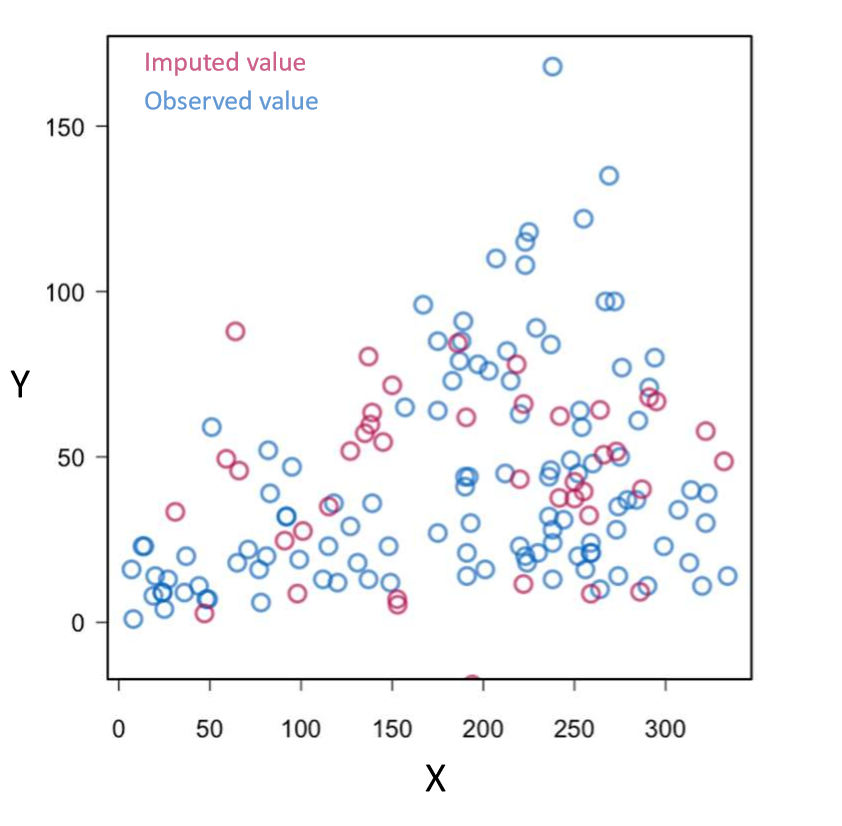
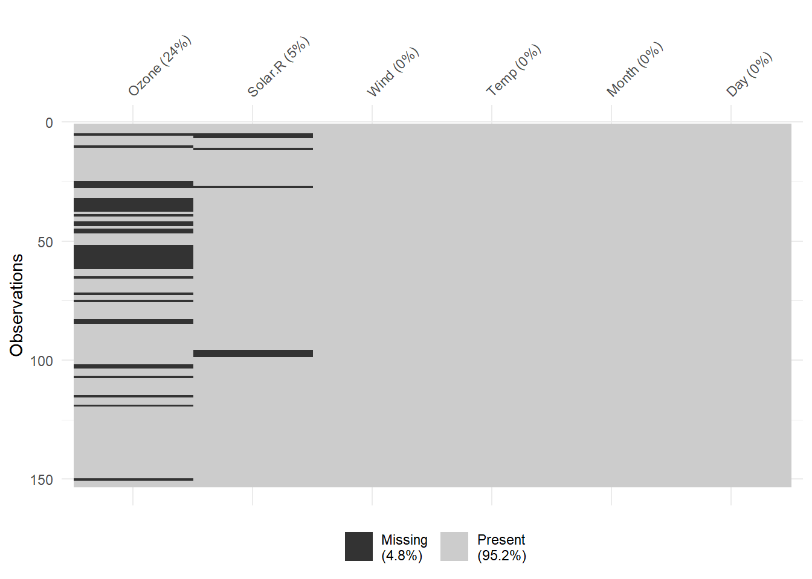

library(dplyr)
library(ggplot2)
library(tidyverse)
library(knitr)
library(kableExtra) # This lets me pretty print the tables
library(naniar) # Used to visualize missing data
library(glue) # This is used for f-strings in R
library(purrr) # Used for summary tables
library(corrplot) # Used to make the correlation matrix
library(corrtable) # used to make the table for the correlation matrix
library(xtable) # Used to make the table for the correlation matrix
library(htmlTable) # Used to make Table 1
library(boot) # Used to make Table 1
library(table1) # Used to make Table 1
library(sjPlot) # Used to generate publication quality tables for regressions
library(mice) # Used for multiple imputation
library(car) # Used for outlier diagnostics with jackknife residualsAdvanced Data Analysis - Project 1
Introduction
The aim of the current study is to assess whether a new gel treatment for gum disease results in lower whole-mouth average pocket depth and attachment loss after one year. Average pocket depth and attachment loss were taken at baseline, and participants were assigned into one of five groups (1 = placebo, 2 = no treatment, 3 = low concentration, 4 = medium concentration, 5 = high concentration) and instructed to apply the gel to their gums twice a day. After 1-year, average pocket depth and attachment loss were recorded again. Data was received as a .csv file containing treatment level, average pocket depth and attachment loss at baseline and at one-year, demographic information, gender, age, number of sites measured, and smoking status. The clinical hypothesis is that average pocket depth and attachment loss in participants who applied the gel will be lower compared to participants who did not. Gender, age, ethnicity, and smoking status will be investigated as potential covariates.
The project description provided by the PI is available below:
Data Preparation
First we begin by loading in the necessary packages
Then we will import the dataset
# Import dataset
data <- read.csv("C:\\Users\\sviea\\Documents\\Advanced Data Analysis\\Project 1 MLR with Covariates\\Project1_data.csv")
names(data)[1] <- "id" # Renaming the weird character out of this colnameAnd visualize the dataset
# Create a nicely formatted table, code adapted from ChatGPT
kable(head(data), format = "html") %>%
kable_styling(bootstrap_options = c("striped", "hover", "condensed"))| id | trtgroup | gender | race | age | smoker | sites | attachbase | attach1year | pdbase | pd1year |
|---|---|---|---|---|---|---|---|---|---|---|
| 101 | 4 | 2 | 5 | 44.57221 | 1 | 162 | 2.432099 | 2.577640 | 3.246914 | 3.407407 |
| 102 | 5 | 2 | 5 | 35.57290 | 1 | 162 | 2.543210 | NA | 3.006173 | NA |
| 103 | 2 | 2 | 5 | 47.94524 | 1 | 144 | 2.881944 | 3.076389 | 3.118056 | 3.125000 |
| 104 | 3 | 2 | 5 | 55.17864 | 1 | 138 | 4.956522 | 5.304348 | 5.217391 | 4.891304 |
| 105 | 1 | 2 | 2 | 43.79740 | 1 | 168 | 1.773810 | 1.452381 | 3.363095 | 2.898810 |
| 106 | 4 | 2 | 5 | 42.14921 | 1 | 168 | 2.369048 | 1.922619 | 3.910714 | 3.083333 |
# Acquire number of variables and observations of the data set
dim(data)[1] 130 11Our data set is comprised of 130 observations, with 11 variables
Variables
The variables in the provided data set are as follows:
- id: Patient ID
- trtgroup: Treatment group (1 = placebo, 2 = no treatment control, 3 = low concentration, 4 = medium concentration, 5 = high concentration gel)
- gender: Gender (1 = male, 2 = female)
- race: Race, (1 = Native American, 2 = African American, 3 = Not used, 4 = Asian, 5 = White)
- age: Age in years
- smoker: Smoking status (0 = No, 1 = Yes)
- sites: Number of sites gum measurements were averaged from
- attachbase: Whole-mouth average attachment loss taken at base timepoint
- attach1year: Whole-mouth average attachment loss after 1 year
- pdbase: Whole-mouth average pocket loss at base timepoint
- pd1year: Whole-mouth average pocket loss after 1 year
Note
Pocket depth and attachment loss are both measurements of how far the gums have pulled away from the teeth, hence smaller values are better
Data Management and Variable Creation
Here we will perform several assessments to ensure fidelity of the data
First we will perform a simple check to assess for correct entry of data
# Create a function to summarize each column
summarize_column <- function(column) {
data.frame(
Min = min(column, na.rm = TRUE),
Max = max(column, na.rm = TRUE)
)
}
# Apply the function to each column and bind the results into a single data frame
summary_df <- map_dfr(data, summarize_column, .id = "Column")
# Pretty print the table
kable(summary_df, format = "html") %>%
kable_styling(bootstrap_options = c("striped", "hover", "condensed"))| Column | Min | Max |
|---|---|---|
| id | 101.0000000 | 270.000000 |
| trtgroup | 1.0000000 | 5.000000 |
| gender | 1.0000000 | 2.000000 |
| race | 1.0000000 | 5.000000 |
| age | 28.5722108 | 74.532512 |
| smoker | 0.0000000 | 1.000000 |
| sites | 114.0000000 | 168.000000 |
| attachbase | 0.8950617 | 5.089286 |
| attach1year | 0.8653846 | 5.304348 |
| pdbase | 2.2628205 | 5.217391 |
| pd1year | 1.9642857 | 4.891304 |
All of these values look believable, and we can conclude that there was at least no grievous mistake during data entry (e.g. no participants with attachment losses of 55, or ages of 180, etc.)
First we will make a visual inspection for outliers using boxplots
# Visualize data to identify outliers
#### Outlier code modified from Joey Kim's code
# This code creates a boxplot for the dvs, and labels the values of any outliers
outlier_attachbase <- boxplot(data$attachbase, main = "Boxplot for Attachment Loss at baseline")$out
text(x = rep(1.2, length(outlier_attachbase)),
y = outlier_attachbase, labels = outlier_attachbase, col = 'red', cex = 0.8)# Repeating for attachment loss at 1 year
outlier_attach1year <- boxplot(data$attach1year, main = "Boxplot for Attachment Loss at 1 year")$out
text(x = rep(1.2, length(outlier_attach1year)),
y = outlier_attach1year, labels = outlier_attach1year, col = 'red', cex = 0.8)# Repeating for pocket depth at base
outlier_pdbase <- boxplot(data$pdbase, main = "Boxplot for Pocket Depth at baseline")$out
text(x = rep(1.2, length(outlier_pdbase)),
y = outlier_pdbase, labels = outlier_pdbase, col = 'red', cex = 0.8)# Repeating for pocket depth at 1 year
outlier_pd1year <- boxplot(data$pd1year, main = "Boxplot for Pocket Depth at 1 year")$out
text(x = rep(1.2, length(outlier_pd1year)),
y = outlier_pd1year, labels = outlier_pd1year, col = 'red', cex = 0.8)Interestingly, there are 3 outliers for attachment loss at base, and only 1 after 1 year. Likewise, there are 4 outliers for pocket depth at base, but only 1 at 1 year. These outlier participants may have dropped out of the study or have missing values, or their values have returned to be within 3 SDs of the mean values. It will be important to assess this!
Outliers will be assessed statistically later using the jackknife residuals. A value will be considered an outlier if the jackknife residual is outside of the range of +/- 3, and has high leverage and influence in the model.
Since we have two timepoints of both attachment loss and pocket depth loss, it will make the most sense to create a change score for each measurement and use those as the dependent variable. This will make the analysis significantly easier to perform and understand/explain, while still being an accurate analysis.
Note
attachchange and pdchange are coded such that higher scores signify a greater loss over time
For example, for subject 101:
\[ 2.577(1 year)-2.43(base) = 0.14 5 (change in attachment loss) \]
Negative values mean that attachment loss/ pocket depth IMPROVED for that participant (i.e., they gained gum attachment back)
# Create new variables for the change score of attachment loss and pocket depth
data["attachchange"] <- data["attach1year"] - data["attachbase"]
data["pdchange"] <- data["pd1year"] - data["pdbase"]
# Check that our change scores are added correctly to the dataframe
kable(head(data), format = "html") %>%
kable_styling(bootstrap_options = c("striped", "hover", "condensed"))| id | trtgroup | gender | race | age | smoker | sites | attachbase | attach1year | pdbase | pd1year | attachchange | pdchange |
|---|---|---|---|---|---|---|---|---|---|---|---|---|
| 101 | 4 | 2 | 5 | 44.57221 | 1 | 162 | 2.432099 | 2.577640 | 3.246914 | 3.407407 | 0.1455410 | 0.1604938 |
| 102 | 5 | 2 | 5 | 35.57290 | 1 | 162 | 2.543210 | NA | 3.006173 | NA | NA | NA |
| 103 | 2 | 2 | 5 | 47.94524 | 1 | 144 | 2.881944 | 3.076389 | 3.118056 | 3.125000 | 0.1944444 | 0.0069444 |
| 104 | 3 | 2 | 5 | 55.17864 | 1 | 138 | 4.956522 | 5.304348 | 5.217391 | 4.891304 | 0.3478261 | -0.3260870 |
| 105 | 1 | 2 | 2 | 43.79740 | 1 | 168 | 1.773810 | 1.452381 | 3.363095 | 2.898810 | -0.3214286 | -0.4642857 |
| 106 | 4 | 2 | 5 | 42.14921 | 1 | 168 | 2.369048 | 1.922619 | 3.910714 | 3.083333 | -0.4464286 | -0.8273810 |
I am curious to look at the outliers for our change scores
# Creating boxplots to examine outliers for attachment loss change scores
outlier_attachchange <- boxplot(data$attachchange, main = "Boxplot for Attachment Loss Change Score")$out
text(x = rep(1.2, length(outlier_attachchange)),
y = outlier_attachchange, labels = outlier_attachchange, col = 'red', cex = 0.8)# Creating boxplots to examine outliers for pocket depth change scores
outlier_pdchange <- boxplot(data$pdchange, main = "Boxplot for Pocket Depth Change Score")$out# Note: no outliers for this variable, commenting out the following code as it throws an error message as a result and prevents the code from knitting.
# text(x = rep(1.2, length(outlier_pdchange)),
# y = outlier_pdchange, labels = outlier_pdchange, col = 'red', cex = 0.8)Interestingly, there are no outliers for pocket depth change, and 3 for attachment loss change.
We will also need to create dummy codes all categorical values.
# Adding dummy codes for all categorical variables with >2 levels
data$placebo <- ifelse(data$trtgroup == 1, 1, 0)
data$control <- ifelse(data$trtgroup == 2, 1, 0)
data$low <- ifelse(data$trtgroup == 3, 1, 0)
data$medium <- ifelse(data$trtgroup == 4, 1, 0)
data$high <- ifelse(data$trtgroup == 5, 1, 0)
data$trt <- ifelse(data$trtgroup == 3 | data$trtgroup == 4 | data$trtgroup ==5, 1, 0) # Collapsing all treatment levels into one category of treatment
data$trt3groups <- ifelse(data$trtgroup ==1, 1, ifelse(data$trtgroup == 2, 2, 3))
kable(head(data), format = "html") %>%
kable_styling(bootstrap_options = c("striped", "hover", "condensed"))| id | trtgroup | gender | race | age | smoker | sites | attachbase | attach1year | pdbase | pd1year | attachchange | pdchange | placebo | control | low | medium | high | trt | trt3groups |
|---|---|---|---|---|---|---|---|---|---|---|---|---|---|---|---|---|---|---|---|
| 101 | 4 | 2 | 5 | 44.57221 | 1 | 162 | 2.432099 | 2.577640 | 3.246914 | 3.407407 | 0.1455410 | 0.1604938 | 0 | 0 | 0 | 1 | 0 | 1 | 3 |
| 102 | 5 | 2 | 5 | 35.57290 | 1 | 162 | 2.543210 | NA | 3.006173 | NA | NA | NA | 0 | 0 | 0 | 0 | 1 | 1 | 3 |
| 103 | 2 | 2 | 5 | 47.94524 | 1 | 144 | 2.881944 | 3.076389 | 3.118056 | 3.125000 | 0.1944444 | 0.0069444 | 0 | 1 | 0 | 0 | 0 | 0 | 2 |
| 104 | 3 | 2 | 5 | 55.17864 | 1 | 138 | 4.956522 | 5.304348 | 5.217391 | 4.891304 | 0.3478261 | -0.3260870 | 0 | 0 | 1 | 0 | 0 | 1 | 3 |
| 105 | 1 | 2 | 2 | 43.79740 | 1 | 168 | 1.773810 | 1.452381 | 3.363095 | 2.898810 | -0.3214286 | -0.4642857 | 1 | 0 | 0 | 0 | 0 | 0 | 1 |
| 106 | 4 | 2 | 5 | 42.14921 | 1 | 168 | 2.369048 | 1.922619 | 3.910714 | 3.083333 | -0.4464286 | -0.8273810 | 0 | 0 | 0 | 1 | 0 | 1 | 3 |
Here we will investigate the missingness of the dataset
# Print number of missing data for each column
kable(colSums(is.na(data)), format = "html", col.names = "Missing") %>%
kable_styling(bootstrap_options = c("striped", "hover", "condensed"))| Missing | |
|---|---|
| id | 0 |
| trtgroup | 0 |
| gender | 0 |
| race | 0 |
| age | 1 |
| smoker | 1 |
| sites | 0 |
| attachbase | 0 |
| attach1year | 27 |
| pdbase | 0 |
| pd1year | 27 |
| attachchange | 27 |
| pdchange | 27 |
| placebo | 0 |
| control | 0 |
| low | 0 |
| medium | 0 |
| high | 0 |
| trt | 0 |
| trt3groups | 0 |
# Here is a handy package that lets us visualize missing data
vis_miss(data)There is 1 missing value for age and smoking status, and 27 missing values for the one year measurements of attachment loss and pocket depth.
This is 27/130 = 20.77% of our sample size, quite large! We will still have 103 participants, which should be sufficient to run our analysis if there are 20-30 participants in each condition. Let’s check
# Create a new dataframe that removes participants with NA outcome variables
data_missing <- data %>%
filter(complete.cases(pdchange, attachchange))
dim(data_missing)[1] 103 20# Count the number of participants in each group
group_counts <- data_missing %>%
count(trtgroup)
print(group_counts) trtgroup n
1 1 23
2 2 23
3 3 21
4 4 20
5 5 16There are only 16 participants in the high concentrations (5) group.
This could cause problems! We will either have to combine all the treatment conditions into one group, or perform some multiple imputations to handle the missing data. This will have to be noted in the discussion.
See Multiple Imputation section for analysis with multiple imputation.
Descriptive Statistics
Here we will acquire the descriptive statistics of our data set and create Table 1. Code modified from cran.r-project.org
# Duplicate the dataset so we are not modifying the original
data2 <- data
# Factor the basic variables that we're interested in
data2$trtgroup <- factor(data2$trtgroup,
levels = c(1,2,3,4,5),
labels = c("Placebo", "Control", "Low", "Medium", "High"))
data2$gender <- factor(data2$gender,
levels = c(1,2),
labels = c("Male", "Female"))
data2$race <- factor(data2$race,
levels = c(1,2,4,5),
labels = c("Native American", "African American", "White", "Asian"))
data2$smoker <- factor(data2$smoker,
levels = c(0,1),
labels = c("Non-Smoker", "Smoker"))
# Create labels to make the names of each variable more professional
label(data2$gender) <- "Gender"
label(data2$race) <- "Race"
label(data2$age) <- "Age (Years)"
label(data2$smoker) <- "Smoking Status"
label(data2$sites) <- "Sites"
label(data2$attachbase) <- "Attachment Loss at Baseline"
label(data2$attach1year) <- "Attachment Loss at 1 Year"
label(data2$pdbase) <- "Pocket Depth at Baseline"
label(data2$pd1year) <- "Pocket Depth at 1 Year"
label(data2$attachchange) <- "Attachment Loss Change"
label(data2$pdchange) <- "Pocket Depth Change"
# Create table 1
table1 <- table1(~ gender + race + age + smoker + sites + attachbase + attach1year + pdbase + pd1year + attachchange + pdchange| trtgroup, data = data2, caption = "Descriptive Statistics", overall = c(left="Total"))
table1| Total (N=130) |
Placebo (N=26) |
Control (N=26) |
Low (N=26) |
Medium (N=26) |
High (N=26) |
|
|---|---|---|---|---|---|---|
| Gender | ||||||
| Male | 54 (41.5%) | 11 (42.3%) | 10 (38.5%) | 11 (42.3%) | 11 (42.3%) | 11 (42.3%) |
| Female | 76 (58.5%) | 15 (57.7%) | 16 (61.5%) | 15 (57.7%) | 15 (57.7%) | 15 (57.7%) |
| Race | ||||||
| Native American | 4 (3.1%) | 0 (0%) | 1 (3.8%) | 1 (3.8%) | 0 (0%) | 2 (7.7%) |
| African American | 9 (6.9%) | 2 (7.7%) | 1 (3.8%) | 5 (19.2%) | 0 (0%) | 1 (3.8%) |
| White | 3 (2.3%) | 1 (3.8%) | 1 (3.8%) | 0 (0%) | 1 (3.8%) | 0 (0%) |
| Asian | 114 (87.7%) | 23 (88.5%) | 23 (88.5%) | 20 (76.9%) | 25 (96.2%) | 23 (88.5%) |
| Age (Years) | ||||||
| Mean (SD) | 49.9 (10.0) | 47.1 (8.61) | 50.7 (9.90) | 51.9 (10.8) | 49.0 (9.49) | 50.8 (11.2) |
| Median [Min, Max] | 48.6 [28.6, 74.5] | 44.7 [30.4, 67.1] | 49.2 [36.1, 73.3] | 51.5 [36.9, 71.9] | 48.1 [28.6, 70.9] | 49.9 [34.1, 74.5] |
| Missing | 1 (0.8%) | 1 (3.8%) | 0 (0%) | 0 (0%) | 0 (0%) | 0 (0%) |
| Smoking Status | ||||||
| Non-Smoker | 81 (62.3%) | 15 (57.7%) | 17 (65.4%) | 18 (69.2%) | 14 (53.8%) | 17 (65.4%) |
| Smoker | 48 (36.9%) | 11 (42.3%) | 9 (34.6%) | 8 (30.8%) | 11 (42.3%) | 9 (34.6%) |
| Missing | 1 (0.8%) | 0 (0%) | 0 (0%) | 0 (0%) | 1 (3.8%) | 0 (0%) |
| Sites | ||||||
| Mean (SD) | 158 (11.3) | 160 (10.1) | 154 (10.9) | 161 (8.54) | 155 (15.7) | 157 (9.65) |
| Median [Min, Max] | 162 [114, 168] | 162 [138, 168] | 159 [126, 168] | 162 [138, 168] | 162 [114, 168] | 159 [138, 168] |
| Attachment Loss at Baseline | ||||||
| Mean (SD) | 2.15 (0.797) | 1.79 (0.646) | 2.46 (0.687) | 2.07 (0.987) | 2.17 (0.656) | 2.24 (0.858) |
| Median [Min, Max] | 2.03 [0.895, 5.09] | 1.71 [0.899, 3.64] | 2.48 [1.22, 4.39] | 1.77 [0.895, 4.96] | 2.12 [1.02, 4.01] | 1.97 [1.26, 5.09] |
| Attachment Loss at 1 Year | ||||||
| Mean (SD) | 2.10 (0.772) | 1.74 (0.542) | 2.33 (0.551) | 2.08 (1.06) | 2.24 (0.652) | 2.15 (0.915) |
| Median [Min, Max] | 1.98 [0.865, 5.30] | 1.64 [0.964, 3.10] | 2.23 [1.46, 3.49] | 1.74 [0.865, 5.30] | 2.25 [1.35, 3.83] | 1.71 [1.22, 4.04] |
| Missing | 27 (20.8%) | 3 (11.5%) | 3 (11.5%) | 5 (19.2%) | 6 (23.1%) | 10 (38.5%) |
| Pocket Depth at Baseline | ||||||
| Mean (SD) | 3.14 (0.437) | 3.09 (0.372) | 3.28 (0.473) | 3.17 (0.593) | 3.05 (0.402) | 3.11 (0.273) |
| Median [Min, Max] | 3.10 [2.26, 5.22] | 3.11 [2.47, 4.08] | 3.11 [2.65, 4.77] | 3.07 [2.26, 5.22] | 3.09 [2.42, 3.91] | 3.14 [2.62, 3.60] |
| Pocket Depth at 1 Year | ||||||
| Mean (SD) | 2.88 (0.488) | 2.75 (0.482) | 2.95 (0.455) | 3.02 (0.578) | 2.84 (0.469) | 2.80 (0.423) |
| Median [Min, Max] | 2.90 [1.96, 4.89] | 2.70 [1.96, 3.75] | 2.90 [2.24, 4.07] | 2.97 [2.16, 4.89] | 2.90 [2.05, 3.78] | 2.87 [2.04, 3.40] |
| Missing | 27 (20.8%) | 3 (11.5%) | 3 (11.5%) | 5 (19.2%) | 6 (23.1%) | 10 (38.5%) |
| Attachment Loss Change | ||||||
| Mean (SD) | -0.0995 (0.276) | -0.0871 (0.242) | -0.222 (0.280) | -0.0178 (0.266) | -0.00656 (0.231) | -0.165 (0.326) |
| Median [Min, Max] | -0.0679 [-1.05, 0.452] | -0.0247 [-0.599, 0.452] | -0.123 [-0.901, 0.194] | 0.0298 [-0.705, 0.348] | -0.0160 [-0.446, 0.339] | -0.0579 [-1.05, 0.199] |
| Missing | 27 (20.8%) | 3 (11.5%) | 3 (11.5%) | 5 (19.2%) | 6 (23.1%) | 10 (38.5%) |
| Pocket Depth Change | ||||||
| Mean (SD) | -0.294 (0.268) | -0.350 (0.277) | -0.338 (0.232) | -0.206 (0.279) | -0.203 (0.272) | -0.382 (0.245) |
| Median [Min, Max] | -0.284 [-0.858, 0.455] | -0.383 [-0.858, 0.161] | -0.367 [-0.759, 0.0145] | -0.244 [-0.661, 0.455] | -0.200 [-0.827, 0.175] | -0.347 [-0.845, 0.0536] |
| Missing | 27 (20.8%) | 3 (11.5%) | 3 (11.5%) | 5 (19.2%) | 6 (23.1%) | 10 (38.5%) |
Preliminary Evaluation of Assumptions
Before we begin digging into the data, let’s take a closer look at the relationships between our variables.
We will first run a correlation matrix to assess the correlations between our IVs. Then we will explore any high correlations that which could affect our analysis.
Finally we will make histograms of attachment loss and pocket depth change to gauge whether they will be normally distributed or if we need to run some transformations.
First we will begin by making a correlation matrix to assess whether any of our IVs are related to each other (multicollinearity). This will inform which variables to incorporate into the final model.
# Since we made dummy codes, we will get spurious correlations that will obfuscate the main relationships we are interested in (e.g. between 'medium' and 'trtgroup'. So we will first make a separate dataset excluding the dummy coded variables
data_for_matrix <- select(data_missing, -placebo, -control, -low, -medium, -high, -trt, -trt3groups)
# Make a correlation matrix with all variables of the trimmed data set
correlation_matrix <- cor(data_for_matrix, use = "complete.obs")
# Plot the matrix
corrplot(correlation_matrix, method = "circle")# Trim the matrix
correlation_matrix[upper.tri(correlation_matrix)] <- NA
# Save the matrix as a LaTex file for paper
cor_table <- xtable(correlation_matrix, caption = "Correlation Matrix", label = "tab:correlation")
print(cor_table, type = "latex", file = "correlation_matrix.tex")Visually, we can see a cluster of high positive correlations between all of attachment loss and pocket depth at baseline and 1 year. This makes sense, as all measurements were taken from the same sites in the gums. This will be explored later (See Exploratory Data Analysis - Dependent Variables)
Just for sanity (and practice), let’s make a table of our correlation coefficients.
# Convert the matrix to a dataframe for better formatting
correlation_df <- as.data.frame(correlation_matrix)
# Use Kable to pretty print the table
kable(correlation_df, caption = "Correlation Matrix", format = "html") %>%
kable_styling(bootstrap_options = c("striped", "hover", "condensed"))| id | trtgroup | gender | race | age | smoker | sites | attachbase | attach1year | pdbase | pd1year | attachchange | pdchange | |
|---|---|---|---|---|---|---|---|---|---|---|---|---|---|
| id | 1.0000000 | NA | NA | NA | NA | NA | NA | NA | NA | NA | NA | NA | NA |
| trtgroup | -0.1452850 | 1.0000000 | NA | NA | NA | NA | NA | NA | NA | NA | NA | NA | NA |
| gender | -0.8306185 | 0.1428866 | 1.0000000 | NA | NA | NA | NA | NA | NA | NA | NA | NA | NA |
| race | 0.1319767 | -0.0314771 | -0.0955531 | 1.0000000 | NA | NA | NA | NA | NA | NA | NA | NA | NA |
| age | 0.0593032 | 0.1100051 | -0.0453862 | 0.1787040 | 1.0000000 | NA | NA | NA | NA | NA | NA | NA | NA |
| smoker | -0.2742888 | -0.0495029 | 0.0206456 | 0.0377211 | -0.2229620 | 1.0000000 | NA | NA | NA | NA | NA | NA | NA |
| sites | 0.0520821 | -0.0393742 | -0.1291127 | 0.0505164 | -0.0274695 | -0.0226381 | 1.0000000 | NA | NA | NA | NA | NA | NA |
| attachbase | -0.1641513 | 0.1440999 | 0.2416242 | 0.0313438 | 0.1354434 | 0.1456234 | -0.4237813 | 1.0000000 | NA | NA | NA | NA | NA |
| attach1year | -0.1440182 | 0.1671499 | 0.2021284 | 0.0671713 | 0.0850851 | 0.1987327 | -0.4042743 | 0.9450189 | 1.0000000 | NA | NA | NA | NA |
| pdbase | -0.2010672 | -0.0224838 | 0.2645908 | 0.0182289 | -0.0884687 | 0.2614919 | -0.1805543 | 0.6047132 | 0.6093346 | 1.0000000 | NA | NA | NA |
| pd1year | -0.0685783 | 0.0126731 | 0.1362804 | 0.0606735 | -0.1246106 | 0.2447030 | -0.1901940 | 0.5601052 | 0.6685457 | 0.8436653 | 1.0000000 | NA | NA |
| attachchange | 0.0964391 | 0.0296043 | -0.1696216 | 0.0928969 | -0.1742586 | 0.1135740 | 0.1578683 | -0.3976360 | -0.0757224 | -0.1342018 | 0.1679506 | 1.0000000 | NA |
| pdchange | 0.2251487 | 0.0622762 | -0.2123192 | 0.0789059 | -0.0731704 | -0.0091784 | -0.0323859 | -0.0317726 | 0.1579534 | -0.2031295 | 0.3543035 | 0.5400668 | 1 |
Other than that, there is a correlation between gender and ID which seems spurious. Let’s investigate that in the next tab.
There is a correlation between gender and ID. Let’s make a simple plot to investigate.
# Creating a simple plot of id and gender
ggplot(data_missing, aes(x = factor(gender), y = id)) +
geom_point() +
labs(title = "ID by Gender")Interestingly, it appears that the experimenters assigned ID based on gender. That is, females received ID’s starting at 101, and males received ID’s starting at 201 (for some reason there’s a few females with ID’s > 200).
It will be important to double check with the PI’s how they assigned participants to treatment group to ensure it was in fact random.
Let’s make a contingency table to see what the breakdown between gender and treatment group is.
# First make a contingency table of both variables
contingency_table <- table(data_missing$gender, data_missing$trtgroup)
# Set the row and column names
dimnames(contingency_table) <- list(
"Gender" = c("Male", "Female"),
"Treatment Condition" = c("Placebo", "Control", "Low", "Medium", "High"))
# Convert the table to a dataframe for better formatting (from ChatGPT)
contingency_df <- as.data.frame.matrix(contingency_table)
# Pretty print the table using kable
kable(contingency_df, format = "html") %>%
kable_styling(bootstrap_options = c("striped", "hover", "condensed"))| Placebo | Control | Low | Medium | High | |
|---|---|---|---|---|---|
| Male | 10 | 7 | 9 | 7 | 3 |
| Female | 13 | 16 | 12 | 13 | 13 |
That’s not good! It looks like males were less likely to be in the high treatment condition compared to females.
This could be because males were more likely to drop out then females. Let’s make a quick table using the original data set before we dropped the missing variables.
# First make a contingency table of both variables
contingency_table_clean <- table(data$gender, data$trtgroup)
# Set the row and column names
dimnames(contingency_table_clean) <- list(
"Gender" = c("Male", "Female"),
"Treatment Condition" = c("Placebo", "Control", "Low", "Medium", "High"))
# Convert the table to a dataframe for better formatting (from ChatGPT)
contingency_df_clean <- as.data.frame.matrix(contingency_table_clean)
# Pretty print the table using kable
kable(contingency_df_clean, format = "html") %>%
kable_styling(bootstrap_options = c("striped", "hover", "condensed"))| Placebo | Control | Low | Medium | High | |
|---|---|---|---|---|---|
| Male | 11 | 10 | 11 | 11 | 11 |
| Female | 15 | 16 | 15 | 15 | 15 |
It looks more balanced before I took out participants with missing data.
Chi-square is known to be unsuitable if a cell has < 5 counts, which we have in this case (3 males in high concentration condition). So I will run Fisher’s test to see if that difference is statistically significant.
fisher_test <- fisher.test(contingency_table)
fisher_test
Fisher's Exact Test for Count Data
data: contingency_table
p-value = 0.506
alternative hypothesis: two.sidedThe p-value is not signficant (p = 0.506).
We know from visualizing the missing data that there were 27 missing data points for the gum measurement DVs, and these all belong to the same people. Furthermore, it appears that males in the treatment groups were more likely to have missing values than in the placebo (and maybe control) group. Is it possible that the gel was having an adverse effect on these participants? Does the gel have an adverse effect only on males and not females for some reason? Let’s explore.
First, I want to investigate if males were more likely to have missing data points. It’s possible if their gums were hurting they simply rejected or avoided having these measurements taken.
Let’s repeat this process and make a contingency table of gender and missing variables.
# First let's add a new dummy code for if a participant is missing any data points
data$missing <- ifelse(apply(data, 1, function(row) any(is.na(row))), 1, 0)
# First make a contingency table of both variables
contingency_table_missing <- table(data$gender, data$missing)
# Set the row and column names
dimnames(contingency_table_missing) <- list(
"Gender" = c("Male", "Female"),
"Missing" = c("Not Missing", "Missing"))
# Convert the table to a dataframe for better formatting (from ChatGPT)
contingency_df_missing <- as.data.frame.matrix(contingency_table_missing)
# Pretty print the table using kable
kable(contingency_df_missing, format = "html") %>%
kable_styling(bootstrap_options = c("striped", "hover", "condensed"))| Not Missing | Missing | |
|---|---|---|
| Male | 35 | 19 |
| Female | 66 | 10 |
Proportionally, it appears that males may be more likely to have missing variables than females. Let’s run a chi-square to check.
chi_square_test <- chisq.test(contingency_df_missing)
chi_square_test
Pearson's Chi-squared test with Yates' continuity correction
data: contingency_df_missing
X-squared = 7.6127, df = 1, p-value = 0.005796Success! Males were more likely to have missing values compared to females (p = 0.005796). This could be a problem (counfound) if something was causing males to avoid having their gums measured compared to females (such as adverse reactions from the gel)
Let’s do a quick chi square test to check if there is a relationship between missing values and treatment condition.
We start off the same way by making a contingency table and running a chi-square test.
# First make a contingency table of both variables
contingency_table_missing2 <- table(data$missing, data$trtgroup)
# Set the row and column names
dimnames(contingency_table_missing2) <- list("Missing" = c("Not Missing", "Missing"),
"Treatmtent Condition" = c("Placebo", "Control", "Low", "Medium", "High"))
# Convert the table to a dataframe for better formatting (from ChatGPT)
contingency_df_missing2 <- as.data.frame.matrix(contingency_table_missing2)
# Pretty print the table using kable
kable(contingency_df_missing2, format = "html") %>%
kable_styling(bootstrap_options = c("striped", "hover", "condensed"))| Placebo | Control | Low | Medium | High | |
|---|---|---|---|---|---|
| Not Missing | 22 | 23 | 21 | 19 | 16 |
| Missing | 4 | 3 | 5 | 7 | 10 |
It does appear that there are more missing variables in the high concentration condition. Is it statistically significant?
# Run a Fisher's Exact Test (since we have < 5 observations in cells)
fisher_test <- fisher.test(contingency_df_missing2)
fisher_test
Fisher's Exact Test for Count Data
data: contingency_df_missing2
p-value = 0.1675
alternative hypothesis: two.sidedNot significant (p = 0.1675). So we can conclude that there is no difference in gender or missing values based on treatment condition (i.e., participants in all treatment conditions were equally likely to be male or female, or have missing values)
However, across the board, males were more likely to have missing values than females. This will be important to note as a caveat during interpretation of the final results.
Here we will simply plot the histograms of attachment loss and pocket depth changes scores, to assess if they appear normally distributed or if we will have to perform a transformation of some kind.
# Plot simple histogram of attachment loss change score
hist(data_missing$attachchange,
main = "Histogram of Attachment Loss Change",
xlab = "Attachment Loss Change",
ylab = "Frequency")# Plot simple histogram of pocket depth change score
hist(data_missing$pdchange,
main = "Histogram of Attachment Loss Change",
xlab = "Pocket Depth Change",
ylab = "Frequency")Both attachment loss and pocket depth change appear to be normally distributed and will not need to be transformed. Attachment loss change is slightly left-tailed but this could be due to outliers, or may just not impact the analysis.
Exploratory Data Analysis
Here I will plot the data and perform a number of simple linear regressions to examine relationships between variables in order to determine which covariates to include in the model.
Let’s examine if there appears to be a difference in the average attachment loss and pocket depth change according to treatment level
ggplot(data_missing, aes(x = factor(trtgroup), y = attachchange)) +
geom_boxplot() +
labs(title = "Boxplot of Attachment Loss change by Treatment")ggplot(data_missing, aes(x = factor(trtgroup), y = pdchange)) +
geom_boxplot() +
labs(title = "Boxplot of Pocket Depth Change by treatment")Attachment Loss Change
Visually, there does not appear to be a difference between the treatment group levels (low, medium, high concentration gel) compared to each other. Additionally, there does not seem to be a difference between the treatment groups and the placebo for attachment loss change.
Pocket Depth Change
Interestingly, the high concentration condition appears to have had a negative effect. Additionally, there seems to be a difference in the treatment groups compared to the no treatment control, but NOT when compared to the placebo. The exception is the low concentration condition compared to the placebo when looking at pocket depth change. Further analysis will reveal whether these differences are statistically significant or not.
The relationship between low vs medium vs high gel concentration does not look very strong. Furthermore, we technically do not have a large enough sample size in the high concentration condition to include it.
For those reasons, let’s make the same comparisons but while combining all treatment levels into one group called treatment.
ggplot(data_missing, aes(x = factor(trt3groups), y = attachchange)) +
geom_boxplot()ggplot(data_missing, aes(x = factor(trt3groups), y = attachchange)) +
geom_boxplot() +
labs(title = "Boxplot of Attachment Loss Change by Treatment")ggplot(data_missing, aes(x = factor(trt3groups), y = pdchange)) +
geom_boxplot() +
labs(title = "Boxplot of Pocket Depth Change by Treatment")By eye, it appears as if there is no difference between the placebo and collapsed treatment groups in attachment loss change or pocket depth change. However, both placebo and any treatment conditions appear to have decreased (?) attachment loss and pocket depth. It may be that this study has null results, unless including one of the covariates changes the results. We will see come the analysis section.
Now we will exlore the relationships between our potential covariates and attachment loss and pocket depth change
# Plot age vs attachment loss change
ggplot(data_missing, aes(x = age, y = attachchange)) +
geom_point() +
labs(title = "Scatterplot of Age vs Attachment Loss Change")Warning: Removed 1 row containing missing values or values outside the scale range
(`geom_point()`).# Plot age vs pocket depth change
ggplot(data_missing, aes(x = age, y = pdchange)) +
geom_point() +
labs(title = "Scatterplot of Age vs Pocket Depth Change")Warning: Removed 1 row containing missing values or values outside the scale range
(`geom_point()`).There does not appear to be any kind of linear relationship between age and attachment loss change or pocket depth change. I will run a model where I include age, but it will likely be removed in the final model.
Is there any relationship between the number of sites measured from and attachment loss change or pocket depth change (e.g. a lower number of sites could lead to less accurate readings)? If so this could be something to include in our data analysis
# Plot sites vs attachment change loss
ggplot(data_missing, aes(x = sites, y = attachchange)) +
geom_point() +
labs(title = "Scatterplot of Attachment Loss Change vs Sites")# Plot sites vs pocket depth chagne
ggplot(data_missing, aes(x = sites, y = pdchange)) +
geom_point() +
labs(title = "Scatterplot of Pocket Depth Change by Sites")There does not seem to be a dramatic difference in attachment loss or pocket depth change based on the number of sites measured from. It’s a bit hard to tell with those two low site subjects, but the points are similar enough to the rest of the dataset that I do not think we have to worry about site number in our analysis.
It is conceivable that there are sex differences in regards to gum health. Let’s examine if there is a difference in attachment loss or pocket depth change based on gender
# Plot gender vs attachment loss change
ggplot(data_missing, aes(x = factor(gender), y = attachchange)) +
geom_boxplot() +
labs(title = "Boxplot of Attachment Loss Change by Gender",
x = "Gender")# Plot gender vs pocket depth change
ggplot(data_missing, aes(x = factor(gender), y = pdchange)) +
geom_boxplot() +
labs(title = "Boxplot of Pocket Depth Change by Gender",
x = "Gender")
By eye, it appears that males may have more pocket depth loss compared with females. This will be a good variable to include as a covariate.
Let’s try a t-test to see if there is any difference in attachment loss or pocket depth change based on gender
# Running a t-test on attachment loss change by gender
male <- data_missing$attachchange[data_missing$gender == 1]
female <- data_missing$attachchange[data_missing$gender == 2]
t_test_result <- t.test(male, female)
t_test_result
Welch Two Sample t-test
data: male and female
t = 2.1969, df = 100.8, p-value = 0.03032
alternative hypothesis: true difference in means is not equal to 0
95 percent confidence interval:
0.01003279 0.19682842
sample estimates:
mean of x mean of y
-0.03217094 -0.13560154 There is a significant difference in attachment loss change score based on gender (t = 2.0502, p = 0.04299)
Let’s repeat for pocket depth change
# Running a t-test on pocket depth change by gender
male <- data_missing$pdchange[data_missing$gender == 1]
female <- data_missing$pdchange[data_missing$gender == 2]
t_test_result <- t.test(male, female)
t_test_result
Welch Two Sample t-test
data: male and female
t = 2.3534, df = 81.683, p-value = 0.02101
alternative hypothesis: true difference in means is not equal to 0
95 percent confidence interval:
0.01884469 0.22488042
sample estimates:
mean of x mean of y
-0.2150844 -0.3369470 There is also a statistically significant difference in pocket depth change based on gender (t = 2.2626, p = 0.02641).
Therefore I will include gender as a covariate in the analysis!
# Plot race vs attachment loss change
ggplot(data_missing, aes(x = factor(race), y = attachchange)) +
geom_boxplot() +
labs(title = "Boxplot of Attachment Change by Race",
x = "Race")ggplot(data_missing, aes(x = factor(race), y = pdchange)) +
geom_boxplot() +
labs(title = "Boxplot of Pocket Depth Change by Race",
x = "Race")There does not seem to be much of a difference in attachment loss or pocket depth based on race. MAYBE African Americans (2) have more pocket depth loss compared to Asians(4), but the sample size was very small for both races (88.1% of the sample identified as White)
Whether the participant is a smoker or not likely has a dramatic effect on gum health. Let’s assess
# Plot smoking status vs attachment loss change
ggplot(data_missing, aes(x = factor(smoker), y = attachchange)) +
geom_boxplot() +
labs(title = "Attachment loss by smoking status",
x = "Smoking Status")# Plot smoking status vs pocket depth change
ggplot(data_missing, aes(x = factor(smoker), y = pdchange)) +
geom_boxplot() +
labs(title = "Attachment loss by smoking status",
x = "Smoking Status")There does not appear to be any difference in attachment loss or pocket depth change based on smoking status. I will test a model with smoking status included, but it will likely be dropped in the final model.
I am curious what the relationship between base line and 1 year measurements are. The study is an RCT so even if baseline measurements affect 1 year measurements, participants should have been randomly assigned to groups so it is essentially controlled for in the study design. It will still be important to assess this relationship as a moderator however. Maybe treatment only worked for those with high attachment loss or pocket depth at the beginning?
First let’s make a simple plot of attachment loss at baseline and at 1 year
# Creating a scatter plot of attachment loss at baseline and 1 year
ggplot(data_missing, aes(x = attachbase, y = attach1year)) +
geom_point() +
labs(title = "Scatterplot of Attachment Loss at Baseline and 1 Year")Let’s check the correlation coefficient.
# Run a correlation test between attachment at base and 1 year
correlation <- cor.test(data_missing$attachbase, data_missing$attach1year)
correlation
Pearson's product-moment correlation
data: data_missing$attachbase and data_missing$attach1year
t = 29.198, df = 101, p-value < 2.2e-16
alternative hypothesis: true correlation is not equal to 0
95 percent confidence interval:
0.9204657 0.9628839
sample estimates:
cor
0.9455558 Those are highly correlated (R = 0.946, p <.0001)! Let’s run a simple linear regression
# Run a regression with attachment loss at 1 year as the DV and attachment at base as the IV
model <- lm(attach1year ~ attachbase, data = data_missing)
summary(model)
Call:
lm(formula = attach1year ~ attachbase, data = data_missing)
Residuals:
Min 1Q Median 3Q Max
-0.55683 -0.15641 -0.01841 0.15202 0.82062
Coefficients:
Estimate Std. Error t value Pr(>|t|)
(Intercept) 0.19872 0.06975 2.849 0.00531 **
attachbase 0.86452 0.02961 29.198 < 2e-16 ***
---
Signif. codes: 0 '***' 0.001 '**' 0.01 '*' 0.05 '.' 0.1 ' ' 1
Residual standard error: 0.2525 on 101 degrees of freedom
Multiple R-squared: 0.8941, Adjusted R-squared: 0.893
F-statistic: 852.5 on 1 and 101 DF, p-value: < 2.2e-16# Plot the model
ggplot(data_missing, aes(x = attachbase, y = attach1year)) +
geom_point() +
geom_smooth(method = "lm", col = "blue") +
labs(title = "Simple Linear Regression of Attachment Loss at Baseline and 1 Year",
x = "Attachment Loss at Baseline",
y = "Attachment Loss at 1 Year")`geom_smooth()` using formula = 'y ~ x'Attachment loss at baseline is a significant predictor of attachment loss at 1 year (t = 29.20, p <.0001). This is important! We should account for attachment loss at baseline by including it as a covariate in our final model!
Let’s do the same process of pocket depth at baseline and 1 year
# Create a scatterplot of pocket depth at base vs 1 year
ggplot(data_missing, aes(x = pdbase, y = pd1year)) +
geom_point() +
labs(title = "Scatterplot of Pocket Depth at Baseline and 1 Year")Similar to attachment loss, we see a relationship between pocket depth at baseline and 1 year. Let’s run the correlation.
# Run a correlation between pocket depth at baseline and 1 year
correlation <- cor.test(data_missing$pdbase, data_missing$pd1year)
correlation
Pearson's product-moment correlation
data: data_missing$pdbase and data_missing$pd1year
t = 15.767, df = 101, p-value < 2.2e-16
alternative hypothesis: true correlation is not equal to 0
95 percent confidence interval:
0.7764571 0.8913340
sample estimates:
cor
0.8432691 While not as strong as attachment loss, there is still a strong relationship between pocket depth at baseline and 1 year (R = 0.84, p <.0001). Let’s run the SLR.
# Run an SLR with pocket depth at 1 year as the DV and pocket depth at baseline as the DV
model <- lm(pd1year ~ pdbase, data = data_missing)
summary(model)
Call:
lm(formula = pd1year ~ pdbase, data = data_missing)
Residuals:
Min 1Q Median 3Q Max
-0.55105 -0.17484 0.01996 0.19627 0.64381
Coefficients:
Estimate Std. Error t value Pr(>|t|)
(Intercept) 0.07504 0.17948 0.418 0.677
pdbase 0.88346 0.05603 15.767 <2e-16 ***
---
Signif. codes: 0 '***' 0.001 '**' 0.01 '*' 0.05 '.' 0.1 ' ' 1
Residual standard error: 0.2634 on 101 degrees of freedom
Multiple R-squared: 0.7111, Adjusted R-squared: 0.7082
F-statistic: 248.6 on 1 and 101 DF, p-value: < 2.2e-16# Plot the model
ggplot(data_missing, aes(x = pdbase, y = pd1year)) +
geom_point() +
geom_smooth(method = "lm", col = "blue") +
labs(title = "Simple Linear Regression of Pocket Depth at Baseline and 1 Year",
x = "Pocket Depth at Baseline",
y = "Pocket Depth at 1 year")`geom_smooth()` using formula = 'y ~ x'Pocket depth at baseline is also a significant predictor of pocket depth at 1 year (t = 15.78, p = <.0001). We should also therefore include pocket depth at baseline as a covariate in our model to control for it!
I am interested in how attachment loss and pocket depth change are related. Since they are both measurements taken from the same sites in the gums, they are likely to be highly correlated. This could have implications on how we perform the analysis and interpret the results.
First, we plot attachment loss change against pocket depth change
# Creating a scatter plot of attachment loss change against pocket depth change
ggplot(data_missing, aes(x = attachchange, y = pdchange)) +
geom_point() +
labs(title = "Scatterplot of Attachment Loss Change and Pocket Depth Change")That looks like a linear relationship! Let’s run a correlation and an SLR.
# Running the correlation
correlation <- cor.test(data_missing$attachchange, data_missing$pdchange)
correlation
Pearson's product-moment correlation
data: data_missing$attachchange and data_missing$pdchange
t = 6.3717, df = 101, p-value = 5.621e-09
alternative hypothesis: true correlation is not equal to 0
95 percent confidence interval:
0.3814636 0.6605362
sample estimates:
cor
0.5354593 # Running the regression
model <- lm(attachchange ~ pdchange, data = data_missing)
summary(model)
Call:
lm(formula = attachchange ~ pdchange, data = data_missing)
Residuals:
Min 1Q Median 3Q Max
-0.83130 -0.12683 0.00563 0.14913 0.46480
Coefficients:
Estimate Std. Error t value Pr(>|t|)
(Intercept) 0.06312 0.03441 1.835 0.0695 .
pdchange 0.55231 0.08668 6.372 5.62e-09 ***
---
Signif. codes: 0 '***' 0.001 '**' 0.01 '*' 0.05 '.' 0.1 ' ' 1
Residual standard error: 0.2343 on 101 degrees of freedom
Multiple R-squared: 0.2867, Adjusted R-squared: 0.2797
F-statistic: 40.6 on 1 and 101 DF, p-value: 5.621e-09# Creating the plot
ggplot(data_missing, aes(x = attachchange, y = pdchange)) +
geom_point() +
geom_smooth(method = "lm", col = "blue") +
labs(title = "Simple Linear Regression of Attachment Loss and Pocket Depth Change",
x = "Pocket Depth Change",
y = "Attachment Loss Change")`geom_smooth()` using formula = 'y ~ x'The correlation shows that attachment loss and pocket depth change are very correlated (R = 0.54, p < .0001). The simple linear regression shows that pocket depth change significantly predicts attachment loss change (t = 6.37, p <.0001).
However, multicollinearity is only an issue when IVs are correlated with each other. We can still run a multivariate multiple linear regression even though the DVs are correlated. In fact this is often the case, and is one of the justifications for using a multivariate MLR in the first place! Back to top of tabset
Treatment Condition
Collapsing the low, medium, and high concentration gel groups into 1 group does not seem to improve the relationship between treatment and attachment loss or pocket depth change. Only models including all 5 treatment groups will therefore be considered from here on out to keep in alignment with the original study design.
Gender
Gender is related to attachment loss and pocket depth change, and as such will be included in the final model.
Supressor / Counfound Variables
A model will be tested with all covariates to assess for possible suppressor / confound variables. But the other potential covariates of race, age, sites, and smoking status were not related to attachment loss or pocket depth change by themselves.
Baseline vs 1 Year Measurements
The baseline measurements of attachment loss and pocket depth were significant predictors of attachment loss and pocket depth at 1 year, respectively. While the RCT nature of the study should ensure that participants were randomly assigned into treatment condition regardless of their baseline measurements, it will still be good practice to include baseline attachment loss and pocket depth into the final model.
Attachment Loss vs Pocket Depth Change Scores
Attachment loss and pocket depth change are highly related to each other, but this should not impact the analysis. PI’s will need to be consulted to interpret the clinical significance of findings, and to help fully understand the implications of any possible differences that may arise between attachment loss and pocket depth change in the analysis.
Data Analysis
Now we can perform the actual analysis!
The clinical hypothesis for this study is that average pocket depth and attachment loss in participants who applied the gel will be lower compared to participants who did not.
The statistical hypotheses are:
• Null Hypothesis:
\[ H_0: μ_{placebo} = μ_{no treatment} = μ_{low} = μ_{medium} = μ_{high} \]
The average pocket depth and attachment loss for all conditions will be equal to each other.
• Alternative Hypothesis:
\[ H_A: μ_{placebo} \neq μ_{no treatment} \neq μ_{low} \neq μ_{medium} \neq μ_{high} \]
At least one of the groups will have different average pocket depth or attachment loss.
Running the Model
For ease of interpretation I will be performing this analysis as two separate linear regressions, one for each outcome variable of either attachment loss or pocket depth change. I will begin with a simple linear regression only including the PEV and either attachment loss change or pocket depth change.
We start by constructing a model with attachment loss change as the dependent variable, and treatment group as the independent variable.
# Running a SLR with attachment loss change as the DV, treatment group as the IV with no treatment as the reference group
model_attach1 <- lm(attachchange ~ placebo + low + medium + high, data = data_missing)
summary(model_attach1)
Call:
lm(formula = attachchange ~ placebo + low + medium + high, data = data_missing)
Residuals:
Min 1Q Median 3Q Max
-0.88283 -0.14813 0.05115 0.17174 0.53945
Coefficients:
Estimate Std. Error t value Pr(>|t|)
(Intercept) -0.22169 0.05590 -3.966 0.000139 ***
placebo 0.13462 0.07906 1.703 0.091771 .
low 0.20388 0.08092 2.520 0.013365 *
medium 0.21514 0.08197 2.625 0.010063 *
high 0.05690 0.08728 0.652 0.515950
---
Signif. codes: 0 '***' 0.001 '**' 0.01 '*' 0.05 '.' 0.1 ' ' 1
Residual standard error: 0.2681 on 98 degrees of freedom
Multiple R-squared: 0.09368, Adjusted R-squared: 0.05669
F-statistic: 2.532 on 4 and 98 DF, p-value: 0.0451# Apply Bonferroni correction
p_values <- summary(model_attach1)$coefficients[,4] # This line selects the fourth column of the resulting coefficients table from summary(model_attach), which is the p-values
p_adjusted <- p.adjust(p_values, method = "bonferroni")
# Compare adjusted p-values to unadjusted p-values
p_comparison <- cbind(p_values, p_adjusted)
p_comparison p_values p_adjusted
(Intercept) 0.0001392148 0.0006960742
placebo 0.0917709125 0.4588545624
low 0.0133650749 0.0668253747
medium 0.0100625287 0.0503126435
high 0.5159498143 1.0000000000# Get confidence intervals
conf_intervals <- confint(model_attach1)
conf_intervals 2.5 % 97.5 %
(Intercept) -0.33262557 -0.1107577
placebo -0.02226569 0.2915028
low 0.04330175 0.3644540
medium 0.05247446 0.3777966
high -0.11629489 0.2300962The overall model is significant (F(4,98) = 2.53, p = 0.0451). Looking at the individual t-statistics, we see that - following adjustment for multiple pairwise comparisons - the placebo group (p = 0.549), low concentration group (p = 0.0668), and high concentration group (p = 1.000) are not statistically different from the control group. The medium concentration group is approaching significance (p = 0.0503).
That was with the no treatment control group as the reference. Let’s see if any of our treatment conditions were different from the placebo group.
# Running a SLR with attachment loss change as the DV, treatment group as the IV with placebo as the reference group
model_attach2 <- lm(attachchange ~ control + low + medium + high, data = data_missing)
summary(model_attach2)
Call:
lm(formula = attachchange ~ control + low + medium + high, data = data_missing)
Residuals:
Min 1Q Median 3Q Max
-0.88283 -0.14813 0.05115 0.17174 0.53945
Coefficients:
Estimate Std. Error t value Pr(>|t|)
(Intercept) -0.08707 0.05590 -1.558 0.1225
control -0.13462 0.07906 -1.703 0.0918 .
low 0.06926 0.08092 0.856 0.3941
medium 0.08052 0.08197 0.982 0.3284
high -0.07772 0.08728 -0.890 0.3754
---
Signif. codes: 0 '***' 0.001 '**' 0.01 '*' 0.05 '.' 0.1 ' ' 1
Residual standard error: 0.2681 on 98 degrees of freedom
Multiple R-squared: 0.09368, Adjusted R-squared: 0.05669
F-statistic: 2.532 on 4 and 98 DF, p-value: 0.0451# Apply Bonferroni correction
p_values <- summary(model_attach2)$coefficients[,4] # This line selects the fourth column of the resulting coefficients table from summary(model_attach), which is the p-values
p_adjusted <- p.adjust(p_values, method = "bonferroni")
# Compare adjusted p-values to unadjusted p-values
p_comparison <- cbind(p_values, p_adjusted)
p_comparison p_values p_adjusted
(Intercept) 0.12254523 0.6127262
control 0.09177091 0.4588546
low 0.39412117 1.0000000
medium 0.32836700 1.0000000
high 0.37538435 1.0000000# Get confidence intervals
conf_intervals <- confint(model_attach2)
conf_intervals 2.5 % 97.5 %
(Intercept) -0.19800701 0.02386082
control -0.29150281 0.02226569
low -0.09131681 0.22983549
medium -0.08214410 0.24317801
high -0.25091345 0.09547760After applying a bonferroni correction, none of the groups are significantly different from the placebo group (p > .05).
Conclusion
While the overall model was significant, the only groups that were statistically different from the no treatment control were the low and medium concentration gel groups (p < 0.05). However, since this was a placebo-controlled RCT, and none of the treatment groups were significantly different from the placebo group, we can conclude that we fail to reject the null hypothesis that the average attachment loss over 1 year is the same between all groups.
Tables
Note: p-values are unadjusted.
Now we will create our model with pocket depth change as the dependent variable and treatment group as the independent variable.
# Running the regression with pocket depth change as the DV, treatment group as the IV with no treatment as the reference group
model_pd <- lm(pdchange ~ placebo + low + medium + high, data = data_missing)
summary(model_pd)
Call:
lm(formula = pdchange ~ placebo + low + medium + high, data = data_missing)
Residuals:
Min 1Q Median 3Q Max
-0.62483 -0.14595 -0.01768 0.16029 0.66130
Coefficients:
Estimate Std. Error t value Pr(>|t|)
(Intercept) -0.33817 0.05466 -6.187 1.43e-08 ***
placebo -0.01152 0.07730 -0.149 0.8818
low 0.13200 0.07912 1.668 0.0984 .
medium 0.13562 0.08015 1.692 0.0938 .
high -0.04413 0.08534 -0.517 0.6063
---
Signif. codes: 0 '***' 0.001 '**' 0.01 '*' 0.05 '.' 0.1 ' ' 1
Residual standard error: 0.2621 on 98 degrees of freedom
Multiple R-squared: 0.07806, Adjusted R-squared: 0.04043
F-statistic: 2.074 on 4 and 98 DF, p-value: 0.08994The overall model is not statistically significant (F(4,98)= 2.074, p = 0.0899). Based on this model, it appears that the gel treatment has no effect on pocket depth change after 1 year.
Conclusion
No groups were significantly different from each other in pocket depth change after 1 year (F(4,98)= 2.074, p = 0.0899), and we fail to reject the null hypothesis that the average pocket depth change over 1 year is the same between all groups.
Tables
Note: p-values are unadjusted
We did not find a main effect based on treatment group. However I am still interested if including any of the covariates changes the results.
# Run a SLR with attachment loss change as the DV and gender as a covariate
model2_attach <- lm(attachchange ~ placebo + low + medium + high + gender, data = data_missing)
summary(model2_attach)
Call:
lm(formula = attachchange ~ placebo + low + medium + high + gender,
data = data_missing)
Residuals:
Min 1Q Median 3Q Max
-0.86656 -0.17533 0.02334 0.16395 0.57717
Coefficients:
Estimate Std. Error t value Pr(>|t|)
(Intercept) -0.07460 0.10988 -0.679 0.4988
placebo 0.12330 0.07883 1.564 0.1210
low 0.19310 0.08064 2.395 0.0186 *
medium 0.21118 0.08143 2.593 0.0110 *
high 0.06704 0.08690 0.771 0.4423
gender -0.08675 0.05593 -1.551 0.1242
---
Signif. codes: 0 '***' 0.001 '**' 0.01 '*' 0.05 '.' 0.1 ' ' 1
Residual standard error: 0.2662 on 97 degrees of freedom
Multiple R-squared: 0.1156, Adjusted R-squared: 0.07003
F-statistic: 2.536 on 5 and 97 DF, p-value: 0.03346# Apply Bonferroni correction
p_values <- summary(model2_attach)$coefficients[,4] # This line selects the fourth column of the resulting coefficients table from summary(model_attach), which is the p-values
p_adjusted <- p.adjust(p_values, method = "bonferroni")
# Compare adjusted p-values to unadjusted p-values
p_comparison <- cbind(p_values, p_adjusted)
p_comparison p_values p_adjusted
(Intercept) 0.49883151 1.00000000
placebo 0.12104977 0.72629859
low 0.01856222 0.11137333
medium 0.01097151 0.06582903
high 0.44234244 1.00000000
gender 0.12415264 0.74491582# Get confidence intervals
conf_intervals <- confint(model2_attach)
conf_intervals 2.5 % 97.5 %
(Intercept) -0.29268916 0.14349242
placebo -0.03315881 0.27976619
low 0.03304940 0.35315426
medium 0.04956814 0.37278247
high -0.10544029 0.23951403
gender -0.19775102 0.02425639A model including gender does not seem to help anything. What about with all covariates (just for fun)?
# Run a SLR with attachment loss change as the DV and gender as a covariate
model3_attach <- lm(attachchange ~ placebo + low + medium + high + gender + race + age + smoker + sites + attachbase + pdbase , data = data_missing)
summary(model3_attach)
Call:
lm(formula = attachchange ~ placebo + low + medium + high + gender +
race + age + smoker + sites + attachbase + pdbase, data = data_missing)
Residuals:
Min 1Q Median 3Q Max
-0.60415 -0.16360 0.02131 0.16645 0.57481
Coefficients:
Estimate Std. Error t value Pr(>|t|)
(Intercept) 0.160630 0.480855 0.334 0.739127
placebo 0.017898 0.079113 0.226 0.821541
low 0.151477 0.077598 1.952 0.054074 .
medium 0.172196 0.079066 2.178 0.032060 *
high 0.045948 0.081336 0.565 0.573557
gender -0.050360 0.054953 -0.916 0.361924
race 0.032325 0.026871 1.203 0.232181
age -0.002472 0.002709 -0.912 0.364067
smoker 0.069384 0.055052 1.260 0.210844
sites -0.001501 0.002539 -0.591 0.555885
attachbase -0.165154 0.043233 -3.820 0.000246 ***
pdbase 0.094444 0.072226 1.308 0.194370
---
Signif. codes: 0 '***' 0.001 '**' 0.01 '*' 0.05 '.' 0.1 ' ' 1
Residual standard error: 0.2456 on 89 degrees of freedom
(2 observations deleted due to missingness)
Multiple R-squared: 0.2908, Adjusted R-squared: 0.2032
F-statistic: 3.318 on 11 and 89 DF, p-value: 0.0007435# Apply Bonferroni correction
p_values <- summary(model3_attach)$coefficients[,4] # This line selects the fourth column of the resulting coefficients table from summary(model_attach), which is the p-values
p_adjusted <- p.adjust(p_values, method = "bonferroni")
# Compare adjusted p-values to unadjusted p-values
p_comparison <- cbind(p_values, p_adjusted)
p_comparison p_values p_adjusted
(Intercept) 0.739127379 1.000000000
placebo 0.821540779 1.000000000
low 0.054074263 0.648891153
medium 0.032060232 0.384722790
high 0.573556835 1.000000000
gender 0.361924208 1.000000000
race 0.232180658 1.000000000
age 0.364067210 1.000000000
smoker 0.210844428 1.000000000
sites 0.555885079 1.000000000
attachbase 0.000246493 0.002957916
pdbase 0.194369803 1.000000000# Get confidence intervals
conf_intervals <- confint(model3_attach)
conf_intervals 2.5 % 97.5 %
(Intercept) -0.794818756 1.116078333
placebo -0.139298371 0.175094025
low -0.002709329 0.305662938
medium 0.015093048 0.329298305
high -0.115665991 0.207561289
gender -0.159551369 0.058830891
race -0.021067104 0.085716311
age -0.007855313 0.002911679
smoker -0.040003508 0.178771331
sites -0.006546011 0.003543891
attachbase -0.251056725 -0.079251471
pdbase -0.049067286 0.237955593Nope. Interestingly the best predictor of attachment loss at 1 year is attachment loss at baseline. The results for pocket depth are likely the same.
I also want to assess if controlling for baseline attachment loss or pocket depth change affects things, since those were strong predictors of each measurement at 1 year (still need to add those SLRs).
model4_attach <- lm(attachchange ~ placebo + low + medium + high + attachbase, data = data_missing)
summary(model4_attach)
Call:
lm(formula = attachchange ~ placebo + low + medium + high + attachbase,
data = data_missing)
Residuals:
Min 1Q Median 3Q Max
-0.52469 -0.16400 0.02084 0.15231 0.73422
Coefficients:
Estimate Std. Error t value Pr(>|t|)
(Intercept) 0.10707 0.09304 1.151 0.2527
placebo 0.04202 0.07616 0.552 0.5824
low 0.14605 0.07592 1.924 0.0573 .
medium 0.17586 0.07622 2.307 0.0232 *
high 0.02665 0.08087 0.330 0.7425
attachbase -0.12902 0.03039 -4.246 4.99e-05 ***
---
Signif. codes: 0 '***' 0.001 '**' 0.01 '*' 0.05 '.' 0.1 ' ' 1
Residual standard error: 0.2475 on 97 degrees of freedom
Multiple R-squared: 0.2357, Adjusted R-squared: 0.1963
F-statistic: 5.984 on 5 and 97 DF, p-value: 7.236e-05# Apply Bonferroni correction
p_values <- summary(model4_attach)$coefficients[,4] # This line selects the fourth column of the resulting coefficients table from summary(model_attach), which is the p-values
p_adjusted <- p.adjust(p_values, method = "bonferroni")
# Compare adjusted p-values to unadjusted p-values
p_comparison <- cbind(p_values, p_adjusted)
p_comparison p_values p_adjusted
(Intercept) 2.526878e-01 1.0000000000
placebo 5.824313e-01 1.0000000000
low 5.731590e-02 0.3438953943
medium 2.317045e-02 0.1390227138
high 7.424826e-01 1.0000000000
attachbase 4.989769e-05 0.0002993861After controlling for treatment group, the only significant predictor of attachment loss change is baseline attachment loss scores (padj = 0.001)
These models were just for exploration, fun, and practice. The final models selected are the SLR’s with treatment group as the IV and either attachment loss change or pocket depth change as the DV. Back to top of tabset
Evaluating Assumptions
In order to evaluate the assumptions of our models, we will first gather the residuals of the model predicting attachment loss change score and the model predicting pocket depth change score.
# Calculate the jackknife residuals of model_attach
jackknife_residuals_attach <- rstudent(model_attach1)
# Calculate the jackknife residuals of model_pd
jackknife_residuals_pd <- rstudent(model_pd)Now that we have our residuals, we can take a closer look at the assumptions.
Since the IV is categorical, we do not need to assess linearity.
Independence can be assessed in part by the study design and how the data was collected. Based on the information provided by the PI, I will assume subjects are independent from each other (e.g. not siblings).
Additionally, we can examine a scatter plot of the model’s residuals against any time point variable (such as ID). Let’s do that.
# Create a scatterplot of jackknife residuals vs ID to assess independence for pocket depth change
ggplot(data_missing, aes(x = id, y = jackknife_residuals_attach)) +
geom_point() +
geom_hline(yintercept = 0) +
labs(title = "Scatterplot of Jackknife Residuals vs ID for Attachment Loss Change",
x = "ID",
y = "Jackknife Residuals")
# Create a scatterplot of jackknife residuals vs ID to assess independence for pocket depth change
ggplot(data_missing, aes(x = id, y = jackknife_residuals_pd)) +
geom_point() +
geom_hline(yintercept = 0) +
labs(title = "Scatterplot of Residuals vs ID for Pocket Depth Change",
x = "ID",
y = "Jackknife Residuals")
The pattern appears random, suggesting independence.
Note: The gap between ID’s 170 and 200 looks odd, but is an artifact from how the experimenters assigned ID, with females starting at 101, and males starting at 201.
Here we will asses that, for any fixed value of X, Y has a normal distribution. We will do this using Q-Q plots and histograms of the residuals.
# Make the Q-Q plots using the jackknife residuals for attachment loss change
qqnorm(jackknife_residuals_attach, main = "Q-Q plots of Jackknife Residuals for model_attach")
qqline(jackknife_residuals_attach, col = "black")# Create histogram of jackknife residuals for model_attach
hist(jackknife_residuals_attach, main = "Histogram of Jackknife Residuals",
xlab = "Jackknife Residuals",
col = "lightblue",
border = "black")
# Make the Q-Q plots using the jackknife residuals for pocket depth change
qqnorm(jackknife_residuals_pd, main = "Q-Q plots of Jackknife Residuals for model_pd")
qqline(jackknife_residuals_pd, col = "black")# Create histogram of jackknife residuals for model_pd
hist(jackknife_residuals_pd, main = "Histogram of Jackknife Residuals",
xlab = "Jackknife Residuals",
col = "lightblue",
border = "black")The histogram for attachment loss change is a little left-tailed. This could be from an outlier. Comparatively, the Q-Q plot and histogram of the residuals for pocket depth change are normally distributed.
We can also include the Shapiro-Wilk test of normality, which provides a p-value and allows us to numerically establish that the assumption of normality is met. If the p-value is < 0.05 you conclude that the assumption of normality is not met.
shapiro.test(jackknife_residuals_attach)
Shapiro-Wilk normality test
data: jackknife_residuals_attach
W = 0.9604, p-value = 0.003601shapiro.test(jackknife_residuals_pd)
Shapiro-Wilk normality test
data: jackknife_residuals_pd
W = 0.99059, p-value = 0.6933The assumption of normality is violated for the attachment loss change model (p = 0.0036), but not for the pocket depth change model (p = 0.6933). Looking at the histogram of the residuals for attachment loss change, this is likely due to an outlier.
Summary
For attachment loss change, we have a slight violation of normality, which could be due to the presence of an outlier. However, regressions are robust to violations of assumptions and this may not actually be an issue. Outliers in the model will be assessed using jackknife residuals to confirm that these points do not have an excessive amount of influence on the model.
Based on the Q-Q plots and histograms of the residuals for pocket depth change, we can conclude that we satisfy the assumption of normality.
Using the scale-location plot will allow us to evaluate the constant variance assumption. This will allow us to see whether the variability of the residuals is roughly constant between each group (Source).
To assess homoscedasticity we examine the residual scatterplots by treatment group. The warning sign to look for here is if the variance differs greatly across groups.
# Make the residual scatterplot using the jackknife residuals for model_attach
ggplot(data_missing, aes(x = trtgroup, y = jackknife_residuals_attach)) +
geom_point() +
labs(title = "Jackknife Residuals vs Treatment Condition for Attachment Loss Change",
x = "Treatment Condition",
y = "JackKnife Residuals")# Make the residual scatterplot using the jackknife residuals for model_pd
ggplot(data_missing, aes(x = trtgroup, y = jackknife_residuals_pd)) +
geom_point() +
labs(title = "Jackknife Residuals vs Treatment Condition for Pocket Depth Change",
x = "Treatment Condition",
y = "JackKnife Residuals")It appears that our variances in all groups are equal!
Additionally, while it is not recommended to perform a statistical test to assess for equality of variances (because formal tests of equality of variance are not very powerful), we can still do this using Bartlett’s test.
bartlett.test(attachchange ~ trtgroup, data = data_missing)
Bartlett test of homogeneity of variances
data: attachchange by trtgroup
Bartlett's K-squared = 2.5462, df = 4, p-value = 0.6364The null hypothesis of the Bartlett test is that the variances are equal. Thus failing to reject the null (p > 0.05) indicates that the data are consistent with the equal variance assumption.
So we meet the assumption of equality of variances, looking good!
To start, we can simply check that the mean of our residuals is close to 0.
#### For attachment loss change score
# Generate the mean of the jackknife residuals for attachment loss change. Should be close to 0.
mean(jackknife_residuals_attach)[1] -0.004132486We are looking good for attachment loss change score. What about for pocket depth change?
#### For pocket depth change score
# Generate the mean of the jackknife residuals for attachment loss change. Should be close to 0.
mean(jackknife_residuals_pd)[1] -6.695748e-06A more sophisticated approach is to plot the fitted values vs jackknife residuals. We can then compare the trend between groups to see if they are random. The fitted line should gravitate around 0 with no obvious trends.
# Generate vectors containing the fitted values vs jackknife residuals so we can plot them
fitted_values_pd <- fitted(model_pd)
ggplot(data_missing, aes(x = fitted_values_pd, y = jackknife_residuals_pd)) +
geom_point() +
geom_smooth(method = "lm")`geom_smooth()` using formula = 'y ~ x' labs(title = "Jackknife Residuals vs Fitted Values for Attachment Loss Change",
x = "Fitted Values",
y = "Jackknife Residuals")$x
[1] "Fitted Values"
$y
[1] "Jackknife Residuals"
$title
[1] "Jackknife Residuals vs Fitted Values for Attachment Loss Change"
attr(,"class")
[1] "labels"The pattern looks random and we can conclude we meet this assumption.
We meet the assumptions of independence, equal variances, and errors centered around zero required for this analysis. There is a slight violation of normality for the attachment loss change model, but this could be due to an outlier.
Results
The total population of the study was 130 participants. Of that total, 54 were male and 76 were female. Each treatment group was evenly divided with 26 subjects. The study team found no cause for alarm within patient demographics (See Table 1). Primary outcome data was only collected on 103 subjects as there were 27 patients that were lost-to-follow-up. These subjects were not included in the final analysis. Additionally, Box-and-Whisker Plots were created to assess outliers in the dataset (See Figure 1). No values were excluded for this analysis. The team ran a correlation matrix to determine if any of the covariates had preexisting relationships. Figures 2A and 2B reveal that there was not any strong correlation between covariates. However, there was a strong relationship between both baseline attachment loss and pocket depth and their subsequent 1-year follow up (r’s > 0.80). Additionally, there was a slight association between gender and attachment loss (r = -.17) and pocket depth change (r = -0.21). A two-sample t-test revealed a significant difference between means for males and females (t = 2.20, p = .0303). As a result, we only included gender as a potential demographic covariate. Given the lack of correlations between the outcome variables and the remaining demographic covariates, the team felt assured to move into regression modeling while primarily focusing on treatment group and the primary outcome variables.
To better determine the effect of randomization status on our primary outcome variables, the team created change-score variables to isolate the 1-year change in attachment loss and pocket depth from baseline. A series of linear regressions were conducted with attachment loss or pocket depth change score as the outcome variable and treatment group as the independent variable. Our first model to assess this question was a simple linear regression with treatment group as the independent variable and change in attachment loss as the dependent variable, using the control group as the reference category. A follow up regression with placebo group as the reference category allowed us to assess for any changes between the treatment groups and the placebo. Both of these models allow us to assess the effect of treatment status in comparison to the control or placebo group.
The results of the analyses can be seen in Figures 3-5. For attachment loss change, the overall model is significant (F(4,98) = 2.53, p = 0.0451). Looking at the individual t-statistics, we see that - following adjustment for multiple pairwise comparisons - the placebo group (p = 0.549), low concentration group (p = 0.0668), and high concentration group (p = 1.000) are not statistically different from the control group. The medium concentration group is approaching significance (95% CI: [0.052, 0.38], p = 0.0503). After changing the reference group to the placebo group and applying a Bonferroni correction, none of the groups are significantly different from the placebo group (all p’s > 0.05). When looking at pocket depth change, the overall model is not statistically significant (F(4,96)= 1.958, p = 0.107). Neither model changed in significance when adding gender as a covariate. Assumptions for a regression were assessed using Q-Q plots, histograms of the residuals, scale-location plots, and scatterplots of the residuals against the fitted-values. All assumptions were met, except for a slight violation of normality for the model examining attachment loss, which is potentially due to outliers in the data.
Discussion
While the overall model for attachment loss change was significant, the only groups that were statistically different from each other were the no treatment control and low concentration gel groups . However, since this was a placebo-controlled RCT, and none of the treatment groups were significantly different from the placebo group, we can conclude that we fail to reject the null hypothesis that the average attachment loss over 1 year is the same between all groups. The model for pocket depth change was not significant and we can conclude that we fail to reject the null hypothesis that the average pocket depth change over 1 year is the same between all groups. Therefore based on the results of both regressions, our final conclusion is that the gel treatment did not reduce attachment loss or pocket depth change compared to a placebo. In fact, there may be evidence that those in the medium-dose treatment group possibly have worse health outcomes compared to the control group, as that comparison was trending towards significance (p = .0503).
- Note: Next paragraph written by classmate Dominick DeMarsico
However, we must address the effect of missingness on our interpretation of the data. There were 27 subjects that were lost-to-follow-up and were unable to provide outcome data (19 of which were male). The lack of males in the final dataset may make this data less predictive of treatment outcomes in males. Additionally, there were more individuals lost-to-follow-up in the treatment groups than the control or placebo groups (11.5% in the placebo and control groups, 19.2% in the low-dose group, 23.1% in the medium-dose group, and 38.5% in the high-dose group), which could further support a potential adverse effect of the gel. Alternatively, there may have been another factor affecting the treatment group which increased the rate of subject attrition that the experimenters are better poised to identify.
Bonus / Practice
In this section I will perform multiple imputation and examine outliers using the jackknife residuals, both of which we’re not covered in class up to this point. This is self study.
Multiple Imputation
Note: This information is taken from Biostats II (BIOS 6612) slides, week 13 lecture 20, and from Flexible Imputation of Missing Data 2nd edition.
Missing Data
To review, there are several assumptions for missing data. The first is MCAR (Missing Completely at Random). This is when the probability of having a missing value is the same for everyone, and is rarely ever the case with real data.
The second is MAR (missing at random). This is when the probability of having a missing value is the same within groups defined by the observed data. That is, if we know that second variable by which the data is NOT MCAR, in addition to the measurements, we can assume MCAR within that second variable. For instance, if we know the missing data is not equal between the sexes, then we can assume MCAR within groups defined by sex. MAR is often observed in situations such as males missing more data than females, or older participants missing more data than younger ones, etc. MAR is more general and more realistic than MCAR. Modern missing data assumptions typically start from the MAR assumption.
MNAR (Missing Not At Random) is the final category of missingness, and is when the the probability of having a missing value varies for reasons that are unknown to you. For example, in public opinion research, those with weaker opinions may respond less than those with stronger opinions, and you may not know this ahead of time. MNAR is the most complex and if you have it, you have your work cut out for you. In that situation, you can find more data about the causes for the missingness, or run lots and lots of sensitivity analyses.
And as they say, the best way to handle missing data is not to have it.
Multiple Imputation
In the current experiment, we know that data is not MCAR (males are missing more data than females), and thus cannot simply throw out subjects with missing values. If the data are not MCAR, listwise deletion (deleting any subject with a missing value) can severely bias estimates of means, regression coefficients and correlations.
Multiple Imputation is a commonly used method to handle missing data when data is not MCAR, but is MAR. It is a process by which you use observed data to “predict†missing data, then use those “imputed†values in further analyses. Multiple imputation builds upon and pools together “single†imputation approaches.
For example, there exists very simple ways of imputing data, such as plugging in the average or median values in place of missing values. This is not sophisticated and kind of sketchy.
Then there exists regression imputation, where for each variable you fit a regression model of it to the observed data, and then use that model to predict missing values, and use those predictions in place of the missing values. However, this injects bias into the estimate for the correlation between X and Y (since the values fall perfectly in line with the hypothesis that X and Y have a non zero correlation. (and are in a perfect line)).
Then there is stochastic regression imputation, which is like regression imputation but adds noise back into the imputations based on the variance of their residuals. This helps account for variance in the results due to missing data.

Multiple imputation works by fitting multiple stochastic imputation models (can be 100’s or 1000’s), analyzing each dataset separately to produce estimates of interest, and finally pooling together these statistics of interest. If done properly, the pooled statistics are unbiased under MAR, and the SE’s will be correct!
Multiple Imputation is “simple, elegant and powerful. It is simple because it fills the holes in the data with plausible values. It is elegant because the uncertainty about the unknown data is coded in the data itself. And it is powerful because it can solve “other†problems that are actually missing data problems in disguise.†- Stef van Buuren
First we will begin with an example of multiple imputation using the built in airquality dataset in R.
# Examining data set and missingness
head(airquality) Ozone Solar.R Wind Temp Month Day
1 41 190 7.4 67 5 1
2 36 118 8.0 72 5 2
3 12 149 12.6 74 5 3
4 18 313 11.5 62 5 4
5 NA NA 14.3 56 5 5
6 28 NA 14.9 66 5 6colSums(is.na(airquality)) Ozone Solar.R Wind Temp Month Day
37 7 0 0 0 0 vis_miss(airquality)
We’re missing 37 values in the Ozone column (24% of values!). We will have to address this missing data somehow.
Mean Imputation
We could quickly fill in missing data with mean imputation…
# Here's how you do mean imputation in mice
imp <- mice(airquality, method = "mean", m = 1, maxit = 1)
iter imp variable
1 1 Ozone Solar.RBut mean imputation will “underestimate the variance, disturb the relations between variables, bias almost any estimate other than the mean and bias the estimate of the mean when data are not MCAR.†You can use mean imputation as a quick fix when there’s a handful of missing values, but it should be avoided in general.
Regression Imputation
We could alternatively do regression imputation, where we fit a model and then use that model to predict the missing values. In regression imputation, you are essentially using the observed data to predict the missing data.
# Performing regression imputation using the mice package
data_example <- airquality[, c("Ozone", "Solar.R")]
imp <- mice(data_example, method = "norm.predict", seed = 1,
m = 1, print = FALSE)
# Plotting missing vs observed values
xyplot(imp, Ozone ~ Solar.R,
main = "Missing vs Observed values for Ozone ~ Solar.R",
auto.key = list(corner = c(0,1),
points = TRUE,
text = c("Observed", "Missing"), col = c("steelblue", "red3")))You predict the values of the missing datapoints with the regression equation resulting from your model. That is, the imputed values correspond to the most likely values under that model. However, the imputed values (red) vary less than the observed values (blue). So each value is the best under the model, but it is very unlikely that the real values would have had this distribution.
Regression imputation yields unbiased estimates of the means and of the regression weights of the model under MCAR. It also does so under MAR, provided that the factors that influence missinginess are part of the model. However, correlations are biased to be greater/higher.
“Regression imputation, as well as its modern incarnations in machine learning is probably the most dangerous of all methods described here. We may be led to believe that we’re to do a good job by preserving the relations between the variables. In reality however, regression imputation artificially strengthens the relations in the data. Correlations are biased upwards. Variability is underestimated. Imputations are too good to be true. Regression imputation is a recipe for false positive and spurious relations.”
Stochastic regression imputation
Stochastic regression imputation is a refinement of regression imputation that attempts to address correlation bias by adding noise back into the predictions of the missing values.
# Impute Ozone from Solar.R by stochastic regression imputation using the mice package.
data_example <- airquality[, c("Ozone", "Solar.R")]
# Perform stochastic regression imputation
imp <- mice(data_example, method = "norm.nob", m = 1, maxit = 1, seed = 1, print = FALSE)
# Plotting missing vs observed values
xyplot(imp, Ozone ~ Solar.R,
main = "Missing vs Observed values for Ozone ~ Solar.R",
auto.key = list(corner = c(0,1),
points = TRUE,
text = c("Observed", "Missing"), col = c("steelblue", "red3")))
“The method = norm.nob argument requests a plain, non-Bayesian, stochastic regression method. This method first estimates the intercept, slope and residual variance under the linear model, then calculates the predicted value for each missing value, and adds a random draw from the residual to the prediction”.
This can create issues though, such as we have one imputed value that is negative! Which might not be plausible (such as in this case, there is no such thing as a negative ozone level).
A more convenient solution is multiple imputation
Multiple Imputation
Multiple imputation creates m > 1 complete data sets. The m results are then pooled into a final point estimate plus standard error. So each data set is identical in observed values, but differs in imputed values.
We then estimate the parameters of interest from each dataset. This is done by applying the analytic method you would have used if the dataset was complete in the first place (here, a regression). The results of the model on each dataset will differ because the data is different. These differences are caused by the uncertainty of what value to impute.
The last step is that these parameter estimates are then pooled together into a single value, and its variance estimated. The variance is assessed by combining the “within-imputation variance with the extra variance caused by the missing data (between-imputation variance)”. So under the appropriate conditions the pooled estimates are unbiased. MI solves the problem of ‘too small’ SEs of other imputation methods we just covered.
Now let’s perform the multiple imputation on the airquality data set.
# Perform multiple imputation on the airquality data set
imp <- mice(airquality, seed = 1, m = 20, print = FALSE) # This line imputes the missing data 20 times
# Fit a linear regression
model_imp <- with(imp, lm(Ozone ~ Wind + Temp + Solar.R)) # You have to run the regression with "with(imp, lm(etc))
summary(model_imp) # This runs a regression on each imputed dataset (so 20 different regressions)# A tibble: 80 × 6
term estimate std.error statistic p.value nobs
<chr> <dbl> <dbl> <dbl> <dbl> <int>
1 (Intercept) -60.7 17.9 -3.40 8.78e- 4 153
2 Wind -2.95 0.514 -5.75 4.96e- 8 153
3 Temp 1.53 0.197 7.74 1.42e-12 153
4 Solar.R 0.0671 0.0184 3.64 3.70e- 4 153
5 (Intercept) -56.8 18.5 -3.07 2.56e- 3 153
6 Wind -3.33 0.532 -6.25 4.04e- 9 153
7 Temp 1.56 0.205 7.58 3.49e-12 153
8 Solar.R 0.0554 0.0191 2.89 4.37e- 3 153
9 (Intercept) -74.0 18.7 -3.95 1.19e- 4 153
10 Wind -2.69 0.540 -4.99 1.67e- 6 153
# ℹ 70 more rowssummary(pool(model_imp)) # This pools together the parameters of all 20 regressions (statistic is Wald's test) into a single model. term estimate std.error statistic df p.value
1 (Intercept) -65.87829658 23.09377412 -2.852643 69.97033 5.696702e-03
2 Wind -3.01897171 0.66252377 -4.556775 70.51194 2.125022e-05
3 Temp 1.63483547 0.25107557 6.511328 75.99913 7.203792e-09
4 Solar.R 0.05861581 0.02267832 2.584662 90.10797 1.135441e-02# mids workflow using pipes
est3 <- airquality %>%
mice(seed = 1, print = FALSE, m = 20) %>%
with(lm(formula = Ozone ~ Wind + Temp + Solar.R)) %>%
pool()
summary(est3) term estimate std.error statistic df p.value
1 (Intercept) -65.87829658 23.09377412 -2.852643 69.97033 5.696702e-03
2 Wind -3.01897171 0.66252377 -4.556775 70.51194 2.125022e-05
3 Temp 1.63483547 0.25107557 6.511328 75.99913 7.203792e-09
4 Solar.R 0.05861581 0.02267832 2.584662 90.10797 1.135441e-02# Run a regression on the imputed airquality data set.
imp <- mice(airquality, seed = 1, print = FALSE)
fit <- with(imp, lm(Ozone ~ Solar.R))
# Print out the estimates for the first and second data set
coef(fit$analyses[[1]])(Intercept) Solar.R
22.2963201 0.1057437 coef(fit$analyses[[2]])(Intercept) Solar.R
20.7891622 0.1140081 Notice that the paremter estimates differ because of the uncertainty created by the missing data.
Applying the standard pooling rules is done with
est <- pool(fit)
summary(est) term estimate std.error statistic df p.value
1 (Intercept) 21.5321395 5.67991951 3.790923 136.3544 0.0002245626
2 Solar.R 0.1091546 0.02846503 3.834693 102.7169 0.0002170873Any R expression produced by expression() can be used on the multiply imputed data…
# Extract residuals and fitted values
# This gets you ALL the residuals for ALL the models/dataset
imp_residuals <- sapply(model_imp[[4]], residuals)
# Same thing but for the fitted
imp_fitted <- sapply(model_imp[[4]],fitted)
# Don't know where to go from here. Apparently you can take the average of all of these to get the average residuals, but it's not published anywhere.We can compare the results of our multiple imputation model with the listwise deletion model to see how different they came out.
model_non_imp <- lm(Ozone ~ Wind + Temp + Solar.R, data = airquality, na.action = na.omit)
summary(model_non_imp)
Call:
lm(formula = Ozone ~ Wind + Temp + Solar.R, data = airquality,
na.action = na.omit)
Residuals:
Min 1Q Median 3Q Max
-40.485 -14.219 -3.551 10.097 95.619
Coefficients:
Estimate Std. Error t value Pr(>|t|)
(Intercept) -64.34208 23.05472 -2.791 0.00623 **
Wind -3.33359 0.65441 -5.094 1.52e-06 ***
Temp 1.65209 0.25353 6.516 2.42e-09 ***
Solar.R 0.05982 0.02319 2.580 0.01124 *
---
Signif. codes: 0 '***' 0.001 '**' 0.01 '*' 0.05 '.' 0.1 ' ' 1
Residual standard error: 21.18 on 107 degrees of freedom
(42 observations deleted due to missingness)
Multiple R-squared: 0.6059, Adjusted R-squared: 0.5948
F-statistic: 54.83 on 3 and 107 DF, p-value: < 2.2e-16summary(pool(model_imp)) term estimate std.error statistic df p.value
1 (Intercept) -65.87829658 23.09377412 -2.852643 69.97033 5.696702e-03
2 Wind -3.01897171 0.66252377 -4.556775 70.51194 2.125022e-05
3 Temp 1.63483547 0.25107557 6.511328 75.99913 7.203792e-09
4 Solar.R 0.05861581 0.02267832 2.584662 90.10797 1.135441e-02Our regression using MI and the complete case (i.e. listwise deletion) data set are comparable!
Note: what we are NOT doing in multiple imputation is taking an average of the imputed data and running a model on that as if its a single, complete data set. “Researchers are often tempted to average the multiply imputed data, and analyze the averaged data as if it were complete. This method yields incorrect standard errors, confidence intervals and p-values, and thus should not be used if any form of statistical testing or uncertainty analysis is to be done on the imputed data. The reason is that the procedure ignores the between-imputation variability, and hence shares all the drawbacks of single imputation”.
Note: It’s recommended to impute then transform, because if you create variables based on other variables, there are relationships between those variables that MI doesn’t account for (it might create combinations of variables that are unrealistic)
You can do this as
# Example of impute then transform method (i.e. how to add variables to an imputed dataset)
data_ex <- boys[, c("age", "hgt", "wgt", "hc", "reg")]
imp <- mice(data_ex, print = FALSE, seed = 1)
# put the data in long format
long <- mice::complete(imp, "long", include = TRUE)
long$new_var <- with(long, 100 * wgt / hgt)
imp.itt <- as.mids(long)Now that we have reviewed the background and gone through coding examples of multiple imputation, we are ready to perform it for the dataset for Project 1.
# Pool the parameters of interest for a regression on the imputed values for attach change control as reference
model_imp <- data %>%
mice(seed = 1, print = FALSE, m = 20) %>%
with(lm(attachchange ~ placebo + low + medium + high)) %>%
pool()Warning: Number of logged events: 1158None of the p-values for the pooled regressions on the MI data are significant (p > 0.05).
How do those parameter estimates compare to the complete case analysis model?
# Compare coefficients to complete case analysis for attachment loss with control as reference category
MI <- summary(model_imp)
MI term estimate std.error statistic df p.value
1 (Intercept) -0.1853493 0.06920536 -2.6782512 65.79196 0.009337056
2 placebo 0.1158204 0.09076258 1.2760813 91.37003 0.205161055
3 low 0.1608502 0.10027097 1.6041549 59.48514 0.113976747
4 medium 0.1612700 0.11393844 1.4154130 37.61151 0.165174849
5 high 0.0930271 0.15435067 0.6026997 18.41109 0.554060413complete_case <- summary(model_attach1)
complete_case$coefficients Estimate Std. Error t value Pr(>|t|)
(Intercept) -0.22169165 0.05590110 -3.9657832 0.0001392148
placebo 0.13461856 0.07905610 1.7028232 0.0917709125
low 0.20387790 0.08091650 2.5196086 0.0133650749
medium 0.21513551 0.08196711 2.6246567 0.0100625287
high 0.05690063 0.08727557 0.6519652 0.5159498143They are drastically different, although still not significant.
We can also plot the imputed values for a sample of m dataset (not too many or it’s hard to see!) in order to visually assess that our imputed values are comparabe to the observed values.
# Plot imputed values for m = 5 data set
impy <- mice(data, seed = 1, print = FALSE, m = 5)Warning: Number of logged events: 285model_impy <- with(imp, attachchange ~ trtgroup)
# This is cool, here's how I can plot the imputed values for attach change
xyplot(impy, attachchange ~ trtgroup,
main = "Example of Imputed Values for m = 5 Dataset",
auto.key = list(space = "right",
points = TRUE,
text = c("Observed", "Missing"), col = c("blue4", "red3")))What about for the same model but with placebo as the reference group?
# Pool the parameters of interest for a regression on the imputed values for attach change placebo as reference
model_imp <- data %>%
mice(seed = 1, print = FALSE, m = 20) %>%
with(lm(attachchange ~ control + low + medium + high)) %>%
pool()Warning: Number of logged events: 1158# Compare coefficients for complete case analysis with attachment with placebo as reference category
summary(model_imp) term estimate std.error statistic df p.value
1 (Intercept) -0.06952890 0.06697153 -1.0381859 75.81298 0.3024834
2 control -0.11582043 0.09076258 -1.2760813 91.37003 0.2051611
3 low 0.04502973 0.11027780 0.4083299 41.79227 0.6851161
4 medium 0.04544952 0.11870540 0.3828766 33.28878 0.7042453
5 high -0.02279333 0.16350701 -0.1394028 16.62753 0.8908064summary(model_attach2)$coefficients Estimate Std. Error t value Pr(>|t|)
(Intercept) -0.08707309 0.05590110 -1.5576275 0.12254523
control -0.13461856 0.07905610 -1.7028232 0.09177091
low 0.06925934 0.08091650 0.8559360 0.39412117
medium 0.08051695 0.08196711 0.9823081 0.32836700
high -0.07771793 0.08727557 -0.8904889 0.37538435The estimates are more comparable, although still pretty different. Still not significant with both methods.
And finally for pocket depth change.
# Pool the parameters of interest for a regression on the imputed values for pocket depth change placebo as reference
model_imp <- data %>%
mice(seed = 1, print = FALSE, m = 20) %>%
with(lm(pdchange ~ placebo + low + medium + high)) %>%
pool()Warning: Number of logged events: 1158# Compare coefficients with complete case analysis for pocket depth change
MI <- summary(model_imp)
MI term estimate std.error statistic df p.value
1 (Intercept) -0.33597389 0.06144440 -5.4679330 66.87925 7.296278e-07
2 placebo -0.00982096 0.08061544 -0.1218248 92.74234 9.033013e-01
3 low 0.11415425 0.07995226 1.4277802 96.05307 1.565984e-01
4 medium 0.11260463 0.08900896 1.2650932 60.47912 2.106907e-01
5 high -0.02704497 0.10936047 -0.2473011 30.38938 8.063384e-01Here the models are a LOT more comparable, although still not significant. It seems we can conclude that missing values impact the attachment loss measurements more than pocket depth change.
Let’s finish by plotting the imputed values for pocket depth change
# Plot imputed values for m = 5 data set
impy <- mice(data, seed = 1, print = FALSE, m = 5)Warning: Number of logged events: 285model_impy <- with(imp, pdchange ~ trtgroup)
# This is cool, here's how I can plot the imputed values for attach change
xyplot(impy, pdchange ~ trtgroup,
main = "Example of Imputed Values for m = 5 Dataset",
auto.key = list(space = "right",
points = TRUE,
text = c("Observed", "Missing"), col = c("blue4", "red3")))Looks pretty good.
Identify Outliers using Jackknife Residuals
In this section we will explore how our analysis would have changed if we identified outliers using the jackknife residuals.
*Note: This information is from BIOS 6602 Week 6 Lecture 10
Jackknife residuals are a type of residual used in regressions that allows us to detect outliers that have a significant impact on the regression coefficients of the model.
Jackknife residuals are calculated by systematically leaving out one observation (i) at a time from a dataset, fitting the regression model to the remaining dataset, and predicting the left out observation. The residual for each observation is then computed based on that prediction.
This process follows three step:
Fit the regression model to the data, excluding observation (i)
Use the model to predict the left-out observation (i)
Calculate the jackknife residual as the difference between the actual value and that fitted value
Jackknife residuals are similar to standardized residuals. Standardized residuals are standardized by the standard error of the regression, and are primarily used for identifying outliers. Jackknife residuals on the other hand allow you to assess the leverage of individuals data points, to see how much they actually influence the model (Source)
Jackknife residuals follow exactly a t(n-p-2) distribution, where approximately 5% of residuals are expected to exceed 1.96 in absolute value. Jackknife residuals make suspicious values more obvious compared to other residuals.
Definitions vary, but we generally consider a residual to be an outlier if the jackknife residual is +- 3.
However, a potential outlier value may not actually have that dramatic of an impact on the model (which is what we are concerned that outliers will do). That is why we use jackknife residuals to investigate leverage and influence.
- Extreme X values can have high leverage.
- Extreme X values can have high influence
- A high-leverage point becomes an influential point if its Y value doesn’t follow the pattern of the rest of the data (i.e. is too low or too high)
An observation is influential if removing it substantially changes the estimate of the coefficients for that model. We use five measurements to assess influence: Jackknife residuals, Leverage, Cook’s Distance (Cook’s D), DFFITS, and DFBETAS.
Leverage: Measures how far a measurement deviates from the mean. You want to examine values greater than 2(p+1)/n
Cook’s D: Measures the influence of an observation on regression predictions. You want to examine observations with d_i > 1.0
DFFITS: Measures the influence of an observation on regression predictions (related to Cook’s D). You want to examine observations outside the range of +-2(sqrt(p+10n)). If h_i is near zero, then that observation has little effect.
DDFBETAS: Measure the influence of an observation on *individual* coefficient estimates. You want to examine estimates outside the range of +- 2/sqrt(n). A large DFBETA for variable k indicates that the i-th observation has a sizeable impact on the k-th regression coefficient.
Note: p = the number of variables in the model
This website was used for coding information for this section, alongside the notes from BIOS 6602
Now that we have covered the background for jackknife residuals, we can apply that knowledge to assess for outliers in our dataset for this project!
Recall that we computed the jackknife residuals earlier.
# Calculate the jackknife residuals of model_attach
jackknife_residuals_attach <- rstudent(model_attach1)
# Calculate the jackknife residuals of model_pd
jackknife_residuals_pd <- rstudent(model_pd)Let’s generate a table so we can handily compare: ID, jackknife residual, leverage (diagonal hat), DFFITS, and DFBETAs for each participant.
# Get leverage values (hat values)
hat_values_attach <- hatvalues(model_attach1)
# Get Cook's D values
cooks_d_attach <- cooks.distance(model_attach1)
# Get the DFFITS values
dffits_attach <- dffits(model_attach1)
# Get the DFBETAS
dfbetas_attach <- dfbetas(model_attach1)
# Make a table with ID and all diagnostic values
diagnostics_attach <- data.frame(id = data_missing$id, jackknife_residuals = jackknife_residuals_attach, leverage = hat_values_attach, cooks_D = cooks_d_attach, dffits = dffits_attach, dfbetas = dfbetas_attach)
kable(head(diagnostics_attach), caption = "Diagnostics for Attachment Loss Change Model", format = "html") %>%
kable_styling(bootstrap_options = c("striped", "hover", "condensed"))| id | jackknife_residuals | leverage | cooks_D | dffits | dfbetas..Intercept. | dfbetas.placebo | dfbetas.low | dfbetas.medium | dfbetas.high |
|---|---|---|---|---|---|---|---|---|---|
| 101 | 0.5800959 | 0.0500000 | 0.0035664 | 0.1330831 | 0.0000000 | 0.0000000 | 0.0000000 | 0.0973313 | 0.0000000 |
| 103 | 1.5996714 | 0.0434783 | 0.0228989 | 0.3410511 | 0.3410511 | -0.2411595 | -0.2356149 | -0.2325949 | -0.2184475 |
| 104 | 1.4044559 | 0.0476190 | 0.0195311 | 0.3140459 | 0.0000000 | 0.0000000 | 0.2270548 | 0.0000000 | 0.0000000 |
| 105 | -0.8928811 | 0.0434783 | 0.0072626 | -0.1903629 | 0.0000000 | -0.1346069 | 0.0000000 | 0.0000000 | 0.0000000 |
| 106 | -1.6995151 | 0.0500000 | 0.0298289 | -0.3898955 | 0.0000000 | 0.0000000 | 0.0000000 | -0.2851530 | 0.0000000 |
| 107 | -2.7107885 | 0.0476190 | 0.0690131 | -0.6061507 | 0.0000000 | 0.0000000 | -0.4382463 | 0.0000000 | 0.0000000 |
We can start by making a plot of the jackknife residuals to assess if there are outliers < -3 or > 3 SDs).
# Plot jackknife outiers and label any values that are > 3 or < -3.
ggplot(data_missing, aes(x = id, y = jackknife_residuals_attach)) + geom_point() +
geom_hline(yintercept = c(-3,0,3)) + ylim(-4,4) +
labs(y = "Jackknife Residuals",
title = "Jackknife Residuals vs ID") +
geom_text(aes(label = ifelse(jackknife_residuals_attach > 3 | jackknife_residuals_attach < -3, id, '')),
vjust = -1)Participant 168 is a potential outlier based on the residual value.
Let’s look at this participant more closely.
# Examine participant 168 to assess what values could make them an outlier
data_missing[data_missing$id == 168,] id trtgroup gender race age smoker sites attachbase attach1year
58 168 5 2 5 54.20397 0 168 5.089286 4.041667
pdbase pd1year attachchange pdchange placebo control low medium high
58 3.410714 2.904762 -1.047619 -0.5059524 0 0 0 0 1
trt trt3groups
58 1 3# Sort our dataset by descending order of attachment at baseline to see if participant 168 is the highest
kable(head(data_missing[order(-data_missing$attachbase),]), caption = "Diagnostics for Attachment Loss Change Model", format = "html") %>%
kable_styling(bootstrap_options = c("striped", "hover", "condensed"))| id | trtgroup | gender | race | age | smoker | sites | attachbase | attach1year | pdbase | pd1year | attachchange | pdchange | placebo | control | low | medium | high | trt | trt3groups | |
|---|---|---|---|---|---|---|---|---|---|---|---|---|---|---|---|---|---|---|---|---|
| 58 | 168 | 5 | 2 | 5 | 54.20397 | 0 | 168 | 5.089286 | 4.041667 | 3.410714 | 2.904762 | -1.0476190 | -0.5059524 | 0 | 0 | 0 | 0 | 1 | 1 | 3 |
| 3 | 104 | 3 | 2 | 5 | 55.17864 | 1 | 138 | 4.956522 | 5.304348 | 5.217391 | 4.891304 | 0.3478261 | -0.3260870 | 0 | 0 | 1 | 0 | 0 | 1 | 3 |
| 40 | 144 | 2 | 2 | 2 | 49.07598 | 0 | 126 | 4.388889 | 3.488000 | 3.666667 | 3.230159 | -0.9008889 | -0.4365079 | 0 | 1 | 0 | 0 | 0 | 0 | 2 |
| 102 | 269 | 3 | 1 | 5 | 64.90075 | 0 | 162 | 4.080247 | 3.685185 | 3.370370 | 3.265432 | -0.3950617 | -0.1049383 | 0 | 0 | 1 | 0 | 0 | 1 | 3 |
| 18 | 121 | 4 | 2 | 5 | 54.49692 | 1 | 138 | 4.014493 | 3.825000 | 3.608696 | 3.783333 | -0.1894928 | 0.1746377 | 0 | 0 | 0 | 1 | 0 | 1 | 3 |
| 17 | 120 | 3 | 2 | 5 | 41.83710 | 1 | 150 | 3.886667 | 3.920000 | 4.200000 | 3.880000 | 0.0333333 | -0.3200000 | 0 | 0 | 1 | 0 | 0 | 1 | 3 |
We have confirmed that participant 168 has the largest values for attachment loss at baseline (5.09). If that’s the case however, participant 3 is not far behind them (4.96) (who incidentally has the highest baseline pocket depth measurement), followed by participant 40 a large amount lower (4.39).
We can also (apparently) run a test statistic to test if we have an outlier using the ‘car’ package
outlierTest(model_attach1)No Studentized residuals with Bonferroni p < 0.05
Largest |rstudent|:
rstudent unadjusted p-value Bonferroni p
58 -3.602896 0.00049863 0.051359This is a test of a hypothesis that we do not have an outlier. We reject that hypothesis (p < 0.05) so we have an outlier (I think).
Leverage is a measure of geometric distance of an observation’s predictor point from the center point of the predictor space. In other words, leverage is a measurement of how far that observation deviates from the mean of that variable. High leverage observations have the potential to be very influential, but they are not necessarily influential. It’s possible for a high leverage point to not be influential, but very difficult for a low leverage point to be influential.
Leverage is calculated as
<img src=“Media/leverage.png†width=“90%>
If X _i is close to Xbar, then h_i is small (i.e. the i-th point has low leverage).
# Caculate cutoff for leverage
cutoff_leverage <- 2*((4+1)/103)
cutoff_leverage[1] 0.09708738# Make leverage plot in ggplot. Set a horizontal line at the cutoff point, and label ID's for participants that pass that line
ggplot(diagnostics_attach, aes(x = id, y = leverage)) +
geom_point() +
geom_hline(yintercept = cutoff_leverage) +
labs(title = "Leverage Plot with Cutoff Line",
x = "ID",
y = "Hat Values") +
geom_text(aes(label = ifelse(leverage > cutoff_leverage, id, "")), vjust = -0.5)
None of our data points pass the cutoff point for leverage/hat values. I think this may be because the IV is categorical which changes the pattern and interpretation. Will check with a professor.
Cook’s D combines information about the residuals and leverage into a single value. A higher Cook’s D value signifies that the data point woud greatly change the regression coefficients, and is therefore influential and may impact the model’s accuracy.
Apparently we actually want to look at a cutoff of Cook’s D as 4/(n-p-1). Let’s calculate that and store it.
# Calculate cutoff for Cook's D
cutoff_d <- 4/((nrow(data_missing) - length(model_attach1$coefficients) - 1))
cutoff_d[1] 0.04123711# Make Cook's D plot in ggplot. Set a horizontal line at the cutoff point, and label ID's for participants that pass that line
ggplot(diagnostics_attach, aes(x = id, y = cooks_D)) +
geom_point() +
geom_hline(yintercept = cutoff_d) +
labs(title = "Cook's D with Cutoff Line",
x = "ID",
y = "Cook's D") +
geom_text(aes(label = ifelse(cooks_D > cutoff_d, id, "")), vjust = -0.5)We see that participants 107, 144, 146 and 168 are past the cutoff for Cook’s D. As when looking at the residuals plot, participant 168 is drastically different compared to the other potential outliers.
Now we will examine DFFITS (Difference in fits). DFFITS is a measure used to identify influential data points in a regression analysis. It quantifes how much the predicted values (Y) of a model change when that particular observation is left out from the analysis. So in this case it is the difference in attachment loss change if we take out observation i from the analysis.
Let’s make a plot where we label the values that are past the cutoff.
# Calculate the cutoff for DFFITS
cutoff_dffits <- 2 * sqrt((4+1)/103)
cutoff_dffits[1] 0.4406526# Make DFFITS plot in ggplot. Set a horizontal line at the cutoff points, and label ID's for participants that pass those lines.
ggplot(diagnostics_attach, aes(x = id, y = dffits)) +
geom_point() +
geom_hline(yintercept = c(cutoff_dffits, -cutoff_dffits)) +
geom_text(aes(label = ifelse(dffits < -cutoff_dffits | dffits > cutoff_dffits, id, "")), vjust = -0.5) +
labs(title = "DFFITS by ID",
x = "ID",
y = "DFFITS")Again we are flagging participants 107, 113, 144, 168. The new addition is 113, who is right on the cutoff line. Again participant 168 is the most egregious, and the other potential outliers are a lot closer to the cutoff.
Now we can look at the DFBETAs (Difference in Betas). DFBETAS quantify how much the beta coefficients for each variable in the model change when you exclude observation i from the analysis.
# Calculate the cutoff for DFBETAS
cutoff_dfbetas <- 2/sqrt(103)
cutoff_dfbetas[1] 0.1970659# Make DFBETAS plot in ggplot. Set a horizontal line at the cutoff points, and label ID's for participants that pass those lines.
# For placebo group
ggplot(diagnostics_attach, aes(x = id, y = dfbetas.placebo)) +
geom_point() +
geom_hline(yintercept = c(cutoff_dfbetas, -cutoff_dfbetas)) +
geom_text(aes(label = ifelse(dfbetas.placebo < -cutoff_dfbetas | dfbetas.placebo > cutoff_dfbetas, id, "")), vjust = -0.5) +
labs(title = "DFBETAS by ID for Placebo",
x = "ID",
y = "DFBETA")# For low dose group
ggplot(diagnostics_attach, aes(x = id, y = dfbetas.low)) +
geom_point() +
geom_hline(yintercept = c(cutoff_dfbetas, -cutoff_dfbetas)) +
geom_text(aes(label = ifelse(dfbetas.low < -cutoff_dfbetas | dfbetas.low > cutoff_dfbetas, id, "")), vjust = -0.5) +
labs(title = "DFBETAS by ID for Low Dose",
x = "ID",
y = "DFBETA")# For medium dose group
ggplot(diagnostics_attach, aes(x = id, y = dfbetas.medium)) +
geom_point() +
geom_hline(yintercept = c(cutoff_dfbetas, -cutoff_dfbetas)) +
geom_text(aes(label = ifelse(dfbetas.medium < -cutoff_dfbetas | dfbetas.medium > cutoff_dfbetas, id, "")), vjust = -0.5) +
labs(title = "DFBETAS by ID for Medium Dose",
x = "ID",
y = "DFBETA")# For high does group
ggplot(diagnostics_attach, aes(x = id, y = dfbetas.high)) +
geom_point() +
geom_hline(yintercept = c(cutoff_dfbetas, -cutoff_dfbetas)) +
geom_text(aes(label = ifelse(dfbetas.high < -cutoff_dfbetas | dfbetas.high > cutoff_dfbetas, id, "")), vjust = -0.5) +
labs(title = "DFBETAS by ID for High Dose",
x = "ID",
y = "DFBETA")That’s a lot of points that are past the cutoff! I think for these plots it might matter less if we’re pass that point. I think the idea here is we get a fine tune look at, for instance, how participant 168 drastically changes the beta for high, compared to how much any other point changes the betas. Other possible values of concern are 144 and 146. All the other data points are still roughly around the cutoff of .20, but 168 is around .7!
The car package in R has some handy plots that we can use to help us with diagnosing outliers.
The first is the influence plot, which essentially combines the jackknife residuals plot with the Cook’s D plot.
# Influence plot
influencePlot(model_attach1, main = "Influence Plot",
sub = "Circle size is proportional to Cook's Distance") StudRes Hat CookD
6 -2.7107885 0.04761905 0.069013121
8 -0.5238664 0.06250000 0.003686439
12 1.4073671 0.06250000 0.026147438
58 -3.6028957 0.06250000 0.154223694Using this plot, we can see that obseration 58 (ID 168) has the largest residual value and Cook’s D value by a large margin!
Additionally, a single line of code provides us with some useful diagnostic plots.
# infIndexPlot gives us a series of plots that we need to investigate influence points
infIndexPlot(model_attach1)The first plot is the Cook’s D plot, the second plot is the studentized residuals plot, and the leverage/hat values plot, all of which we plotted before. New is the third plot which is the Bonferroni P-value plot.
Based on these plots we can see pretty readily that participant 168 is a true outlier. That is, they are a point that has high leverage AND influence in this model.
We saw that participant 168 is the most egregious offender, and participants 107, 144, 146, and MAYBE 113 are flagging past our different cutoff points.
Let’s take one last look at the table of these participants
# Pretty print diagnostics table of potential outliers
kable(diagnostics_attach[diagnostics_attach$id %in% c(107,113,144,146,168),], caption = "Correlation Matrix", format = "html") %>%
kable_styling(bootstrap_options = c("striped", "hover", "condensed"))| id | jackknife_residuals | leverage | cooks_D | dffits | dfbetas..Intercept. | dfbetas.placebo | dfbetas.low | dfbetas.medium | dfbetas.high | |
|---|---|---|---|---|---|---|---|---|---|---|
| 6 | 107 | -2.710789 | 0.0476190 | 0.0690131 | -0.6061507 | 0.0000000 | 0.0000000 | -0.4382463 | 0.0000000 | 0.0000000 |
| 11 | 113 | 2.092587 | 0.0434783 | 0.0384816 | 0.4461411 | 0.0000000 | 0.3154694 | 0.0000000 | 0.0000000 | 0.0000000 |
| 40 | 144 | -2.670168 | 0.0434783 | 0.0610008 | -0.5692818 | -0.5692818 | 0.4025431 | 0.3932880 | 0.3882470 | 0.3646322 |
| 42 | 146 | -2.291912 | 0.0434783 | 0.0457672 | -0.4886373 | -0.4886373 | 0.3455188 | 0.3375748 | 0.3332479 | 0.3129784 |
| 58 | 168 | -3.602896 | 0.0625000 | 0.1542237 | -0.9302637 | 0.0000000 | 0.0000000 | 0.0000000 | 0.0000000 | -0.7143938 |
Across the board we can see that participant 168 has worse values for almost everything, in particular the jackknife residual, Cook’s D, and DFFITS values. I can confidently conclude that we should remove participant 168 as an outlier, and feel justified in keeping participants 107, 113, 144, and 146 based on the closeness to the rest of the data points on the previous plots.
Let’s generate a table so we can handily compare: ID, jackknife residual, leverage (diagonal hat), DFFITS, and DFBETAs for each participant.
# Get leverage values (hat values)
hat_values_pd <- hatvalues(model_pd)
# Get Cook's D values
cooks_d_pd <- cooks.distance(model_pd)
# Get the DFFITS values
dffits_pd <- dffits(model_pd)
# Get the DFBETAS
dfbetas_pd <- dfbetas(model_pd)
# Make a table with ID and all diagnostic values
diagnostics_pd <- data.frame(id = data_missing$id, jackknife_residuals = jackknife_residuals_pd, leverage = hat_values_pd, cooks_D = cooks_d_pd, dffits = dffits_pd, dfbetas = dfbetas_pd)
kable(head(diagnostics_pd), caption = "Diagnostics for Attachment Loss Change Model", format = "html") %>%
kable_styling(bootstrap_options = c("striped", "hover", "condensed"))| id | jackknife_residuals | leverage | cooks_D | dffits | dfbetas..Intercept. | dfbetas.placebo | dfbetas.low | dfbetas.medium | dfbetas.high |
|---|---|---|---|---|---|---|---|---|---|
| 101 | 1.4284091 | 0.0500000 | 0.0212518 | 0.3276995 | 0.0000000 | 0.0000000 | 0.0000000 | 0.2396655 | 0.0000000 |
| 103 | 1.3517762 | 0.0434783 | 0.0164727 | 0.2881997 | 0.2881997 | -0.2037879 | -0.1991025 | -0.1965505 | -0.1845955 |
| 104 | -0.4668576 | 0.0476190 | 0.0021971 | -0.1043925 | 0.0000000 | 0.0000000 | -0.0754757 | 0.0000000 | 0.0000000 |
| 105 | -0.4451251 | 0.0434783 | 0.0018161 | -0.0949010 | 0.0000000 | -0.0671051 | 0.0000000 | 0.0000000 | 0.0000000 |
| 106 | -2.5107398 | 0.0500000 | 0.0629491 | -0.5760032 | 0.0000000 | 0.0000000 | 0.0000000 | -0.4212642 | 0.0000000 |
| 107 | -1.7949702 | 0.0476190 | 0.0315049 | -0.4013675 | 0.0000000 | 0.0000000 | -0.2901882 | 0.0000000 | 0.0000000 |
We can start by making a plot of the jackknife residuals to assess if there are outliers < -3 or > 3 SDs).
# Plot jackknife outiers and label any values that are > 3 or < -3.
ggplot(data_missing, aes(x = id, y = jackknife_residuals_pd)) + geom_point() +
geom_hline(yintercept = c(-3,0,3)) + ylim(-4,4) +
labs(y = "Jackknife Residuals",
title = "Jackknife Residuals vs ID") +
geom_text(aes(label = ifelse(jackknife_residuals_pd > 3 | jackknife_residuals_pd < -3, id, '')),
vjust = -1)We have no jackknife residuals +- 3. That’s a good sign!
Let’s sort our dataset and see who has the highest pocket depth at baseline.
# Sort our dataset by descending order of pocket depth at baseline to see who is the highest
kable(head(data_missing[order(-data_missing$pdbase),]), caption = "Diagnostics for Attachment Loss Change Model", format = "html") %>%
kable_styling(bootstrap_options = c("striped", "hover", "condensed"))| id | trtgroup | gender | race | age | smoker | sites | attachbase | attach1year | pdbase | pd1year | attachchange | pdchange | placebo | control | low | medium | high | trt | trt3groups | |
|---|---|---|---|---|---|---|---|---|---|---|---|---|---|---|---|---|---|---|---|---|
| 3 | 104 | 3 | 2 | 5 | 55.17864 | 1 | 138 | 4.956522 | 5.304348 | 5.217391 | 4.891304 | 0.3478261 | -0.3260870 | 0 | 0 | 1 | 0 | 0 | 1 | 3 |
| 20 | 124 | 2 | 2 | 5 | 41.01574 | 1 | 162 | 2.901235 | 2.808642 | 4.771605 | 4.067901 | -0.0925926 | -0.7037037 | 0 | 1 | 0 | 0 | 0 | 0 | 2 |
| 17 | 120 | 3 | 2 | 5 | 41.83710 | 1 | 150 | 3.886667 | 3.920000 | 4.200000 | 3.880000 | 0.0333333 | -0.3200000 | 0 | 0 | 1 | 0 | 0 | 1 | 3 |
| 77 | 234 | 1 | 2 | 5 | 51.12115 | 0 | 144 | 2.756944 | 2.527778 | 4.083333 | 3.631944 | -0.2291667 | -0.4513889 | 1 | 0 | 0 | 0 | 0 | 0 | 1 |
| 5 | 106 | 4 | 2 | 5 | 42.14921 | 1 | 168 | 2.369048 | 1.922619 | 3.910714 | 3.083333 | -0.4464286 | -0.8273810 | 0 | 0 | 0 | 1 | 0 | 1 | 3 |
| 6 | 107 | 3 | 2 | 5 | 37.15811 | 1 | 156 | 3.544872 | 2.839744 | 3.897436 | 3.237179 | -0.7051282 | -0.6602564 | 0 | 0 | 1 | 0 | 0 | 1 | 3 |
Participant 104 has the highest baseline pocket depth. Interestingly it is not 168, who was our outlier for attachment loss.
Let’s run that test we did earlier to see if there’s an outlier in the pocket depth model.
outlierTest(model_pd)No Studentized residuals with Bonferroni p < 0.05
Largest |rstudent|:
rstudent unadjusted p-value Bonferroni p
82 2.664155 0.0090393 0.93105This is a test of a hypothesis that we do not have an outlier. We fail to reject the null and thus have more evidence that we do not have outliers for the pocket depth model.
Let’s plot leverage for our model on pocket depth change.
# Caculate cutoff for leverage
cutoff_leverage <- 2*((4+1)/103)
cutoff_leverage[1] 0.09708738# Make leverage plot in ggplot. Set a horizontal line at the cutoff point, and label ID's for participants that pass that line
ggplot(diagnostics_pd, aes(x = id, y = leverage)) +
geom_point() +
geom_hline(yintercept = cutoff_leverage) +
labs(title = "Leverage Plot with Cutoff Line",
x = "ID",
y = "Hat Values") +
geom_text(aes(label = ifelse(leverage > cutoff_leverage, id, "")), vjust = -0.5)Again we are good on leverage.
Let’s make our plot for Cook’s D for pocket depth change.
# Calculate cutoff for Cook's D
cutoff_d <- 4/((nrow(data_missing) - length(model_attach1$coefficients) - 1))
cutoff_d[1] 0.04123711# Make Cook's D plot in ggplot. Set a horizontal line at the cutoff point, and label ID's for participants that pass that line
ggplot(diagnostics_pd, aes(x = id, y = cooks_D)) +
geom_point() +
geom_hline(yintercept = cutoff_d) +
labs(title = "Cook's D with Cutoff Line",
x = "ID",
y = "Cook's D") +
geom_text(aes(label = ifelse(cooks_D > cutoff_d, id, "")), vjust = -0.5)We see that participants 106, 118, and 239 have Cook’s D values past the cutoff. Interestingly participant 104 who had the highest baseline pocket depth did not flag here.
Let’s make the DFFITS plot for pocket depth change.
# Calculate the cutoff for DFFITS
cutoff_dffits <- 2 * sqrt((4+1)/103)
cutoff_dffits[1] 0.4406526# Make DFFITS plot in ggplot. Set a horizontal line at the cutoff points, and label ID's for participants that pass those lines.
ggplot(diagnostics_pd, aes(x = id, y = dffits)) +
geom_point() +
geom_hline(yintercept = c(cutoff_dffits, -cutoff_dffits)) +
geom_text(aes(label = ifelse(dffits < -cutoff_dffits | dffits > cutoff_dffits, id, "")), vjust = -0.5) +
labs(title = "DFFITS by ID",
x = "ID",
y = "DFFITS")Participants 106, 118, and 239 are flagging here again. In addition we have 137 and 233, which are near enough to the cutoff that we can ignore them.
Now we can look at the DFBETAS plot for pocket depth change.
# Calculate the cutoff for DFBETAS
cutoff_dfbetas <- 2/sqrt(103)
cutoff_dfbetas[1] 0.1970659# Make DFBETAS plot in ggplot. Set a horizontal line at the cutoff points, and label ID's for participants that pass those lines.
# For placebo group
ggplot(diagnostics_pd, aes(x = id, y = dfbetas.placebo)) +
geom_point() +
geom_hline(yintercept = c(cutoff_dfbetas, -cutoff_dfbetas)) +
geom_text(aes(label = ifelse(dfbetas.placebo < -cutoff_dfbetas | dfbetas.placebo > cutoff_dfbetas, id, "")), vjust = -0.5) +
labs(title = "DFBETAS by ID for Placebo",
x = "ID",
y = "DFBETA")# For low dose group
ggplot(diagnostics_pd, aes(x = id, y = dfbetas.low)) +
geom_point() +
geom_hline(yintercept = c(cutoff_dfbetas, -cutoff_dfbetas)) +
geom_text(aes(label = ifelse(dfbetas.low < -cutoff_dfbetas | dfbetas.low > cutoff_dfbetas, id, "")), vjust = -0.5) +
labs(title = "DFBETAS by ID for Low Dose",
x = "ID",
y = "DFBETA")# For medium dose group
ggplot(diagnostics_pd, aes(x = id, y = dfbetas.medium)) +
geom_point() +
geom_hline(yintercept = c(cutoff_dfbetas, -cutoff_dfbetas)) +
geom_text(aes(label = ifelse(dfbetas.medium < -cutoff_dfbetas | dfbetas.medium > cutoff_dfbetas, id, "")), vjust = -0.5) +
labs(title = "DFBETAS by ID for Medium Dose",
x = "ID",
y = "DFBETA")# For high does group
ggplot(diagnostics_pd, aes(x = id, y = dfbetas.high)) +
geom_point() +
geom_hline(yintercept = c(cutoff_dfbetas, -cutoff_dfbetas)) +
geom_text(aes(label = ifelse(dfbetas.high < -cutoff_dfbetas | dfbetas.high > cutoff_dfbetas, id, "")), vjust = -0.5) +
labs(title = "DFBETAS by ID for High Dose",
x = "ID",
y = "DFBETA")Again we have a lot of points that are past the cutoff here. None as far off as 168 in the attachment loss model, 239 is the only one that is concerning.
The car package in R has some handy plots that we can use to help us with diagnosing outliers.
The first is the influence plot, which essentially combines the jackknife residuals plot with the Cook’s D plot.
# Influence plot
influencePlot(model_pd, main = "Influence Plot",
sub = "Circle size is proportional to Cook's Distance") StudRes Hat CookD
5 -2.5107398 0.05000000 0.062949101
8 -0.8158788 0.06250000 0.008905825
12 0.4184503 0.06250000 0.002354494
82 2.6641548 0.04761905 0.066819586Here we can see that none of our residuals are +- 3, but we do have some concerns with large Cook’s distance, particularly with observation 82 (ID = 239).
Additionally, a single line of code provides us with some useful diagnostic plots.
# infIndexPlot gives us a series of plots that we need to investigate influence points
infIndexPlot(model_pd)Based on these plots, it is arguable that participant 239 is an outlier for pocket depth. Though they do not have an extreme jackknife residual, the large Cook’s distance suggests that this data point has substantial infuence on the model’s parameters.
However, a closer look reveals that the influence and leverage values for the pocket depth model are all comparable to the potential outliers in the attachmnet loss model we chose to keep (Cook’s D ~0.06). Specifically, while it appears that participant 239 here has a large Cook’s D (0.068) compared to the rest of the values, it is nowhere near as high as participant 168 was in the attachment loss model (0.15)!
Participants 106 and 239 were the only potential concerns here. However, as noted, their Cook’s D is comparable to the values we kept in the attachment loss model, and are < 1/2 of what the Cook’s D was for participant 168 who we plan to remove as an outlier in the attachment loss model!
# Pretty print diagnostics table of potential outliers
kable(diagnostics_pd[diagnostics_attach$id %in% c(106,239),], caption = "Correlation Matrix", format = "html") %>%
kable_styling(bootstrap_options = c("striped", "hover", "condensed"))| id | jackknife_residuals | leverage | cooks_D | dffits | dfbetas..Intercept. | dfbetas.placebo | dfbetas.low | dfbetas.medium | dfbetas.high | |
|---|---|---|---|---|---|---|---|---|---|---|
| 5 | 106 | -2.510740 | 0.050000 | 0.0629491 | -0.5760032 | 0 | 0 | 0.0000000 | -0.4212642 | 0 |
| 82 | 239 | 2.664155 | 0.047619 | 0.0668196 | 0.5957231 | 0 | 0 | 0.4307071 | 0.0000000 | 0 |
# Remove participant 168 from the dataset
data_missing_outlier <- data_missing[data_missing$id != 168,]
# Run model 1 attachment loss
model_attach1_outlier <- lm(attachchange ~ placebo + low + medium + high, data = data_missing_outlier)
summary(model_attach1_outlier)
Call:
lm(formula = attachchange ~ placebo + low + medium + high, data = data_missing_outlier)
Residuals:
Min 1Q Median 3Q Max
-0.68731 -0.16279 0.04936 0.16823 0.53945
Coefficients:
Estimate Std. Error t value Pr(>|t|)
(Intercept) -0.22169 0.05277 -4.201 5.9e-05 ***
placebo 0.13462 0.07463 1.804 0.07435 .
low 0.20388 0.07638 2.669 0.00891 **
medium 0.21514 0.07737 2.780 0.00652 **
high 0.11576 0.08399 1.378 0.17130
---
Signif. codes: 0 '***' 0.001 '**' 0.01 '*' 0.05 '.' 0.1 ' ' 1
Residual standard error: 0.2531 on 97 degrees of freedom
Multiple R-squared: 0.09493, Adjusted R-squared: 0.05761
F-statistic: 2.543 on 4 and 97 DF, p-value: 0.04442# Run model 2 attachmnent loss
model_attach2_outlier <- lm(attachchange ~ control + low + medium + high, data = data_missing_outlier)
summary(model_attach2_outlier)
Call:
lm(formula = attachchange ~ control + low + medium + high, data = data_missing_outlier)
Residuals:
Min 1Q Median 3Q Max
-0.68731 -0.16279 0.04936 0.16823 0.53945
Coefficients:
Estimate Std. Error t value Pr(>|t|)
(Intercept) -0.08707 0.05277 -1.650 0.1022
control -0.13462 0.07463 -1.804 0.0743 .
low 0.06926 0.07638 0.907 0.3668
medium 0.08052 0.07737 1.041 0.3006
high -0.01886 0.08399 -0.225 0.8228
---
Signif. codes: 0 '***' 0.001 '**' 0.01 '*' 0.05 '.' 0.1 ' ' 1
Residual standard error: 0.2531 on 97 degrees of freedom
Multiple R-squared: 0.09493, Adjusted R-squared: 0.05761
F-statistic: 2.543 on 4 and 97 DF, p-value: 0.04442# Run the pocket depth model
model_pd_outlier <- lm(pdchange ~ control + low + medium + high, data = data_missing_outlier)
summary(model_pd_outlier)
Call:
lm(formula = pdchange ~ control + low + medium + high, data = data_missing_outlier)
Residuals:
Min 1Q Median 3Q Max
-0.6248 -0.1513 -0.0129 0.1616 0.6613
Coefficients:
Estimate Std. Error t value Pr(>|t|)
(Intercept) -0.34969 0.05488 -6.372 6.26e-09 ***
control 0.01152 0.07761 0.148 0.8823
low 0.14352 0.07943 1.807 0.0739 .
medium 0.14714 0.08046 1.829 0.0705 .
high -0.02437 0.08734 -0.279 0.7809
---
Signif. codes: 0 '***' 0.001 '**' 0.01 '*' 0.05 '.' 0.1 ' ' 1
Residual standard error: 0.2632 on 97 degrees of freedom
Multiple R-squared: 0.07456, Adjusted R-squared: 0.0364
F-statistic: 1.954 on 4 and 97 DF, p-value: 0.1077There is no difference in our models after removing outlier 168.
To do List
Important
check for outliers using jackknife residuals
Aesthetic
Try adding captions to all graphs and tables (eg #| fig-cap )
mess around with a final clean version that makes use of echo = FALSE to hide unneeded code chunks
question for a TA or prof:
consuslting Prof: Did he make the slides for jackknife residuals? Why the cutoff in Cooks D of 1.0, interwebs says other equation.
what is leverage vs half normal quantile plot? in detecting outliers.
good way to get correlation matrix or just how do you get good tables out of R for papers? What’s you rmethodology/pipeline?
Suppose that the complete-data model is a regression with outcome Y and predictors X . If the missing data occur in Y only, complete-case analysis and multiple imputation are equivalent, so then complete-case analysis is preferred since it is easier, more efficient and more robust (Von Hippel 2007).
Complete case analysis is the same as listwise deletion, which we did anyway.
If the missing data occur in y only, then it is possible to correct the variance formulas of method norm.predict. However, if the missing data occur in X , norm.predict is severely biased, so then variance correction is not useful.
…
good format to follow for write up. “I used mice (Multiple imputation by chained equations) to impute my dataset with missing variables. Next, I did a linear regression on the imputed datasets (m=50) and pooled the results according to Rubin’s Rules.”
Look into Little’s Test for MCAR
Meeting with Zoey
**Look into making R shiny apps**
Be careful with Kable cause it can cause conflicts (and crashes)
Work with base R so it’s not effected by updates of packages
Table 1 is good enough, if not use custom table. You can create a matrix first.
Look into R custom table (could also use kable)(but can crash)
plotly for interactive graphs
r-graph-galler.com/interactive-charts.html plotly gampinder, highchart interactive line plot in R (plotly is more popular) (highchart requires minimal coding, seems simpler. but is limited)
can use R to directly send an email to someone
Options: Directly upload photos to online cloud and link to those Everytime you share the doc, share as folders and include link to those folders. Use setwd()./(test) command and set the working directory at the start(the . means the current folder) Use github (?) (be careful of automatic updates function, )
alexkaizer.com/bios_6618 - can ask him how to turn my qmd into a website.
look into Tableau for interactive graphs (she says its easy).